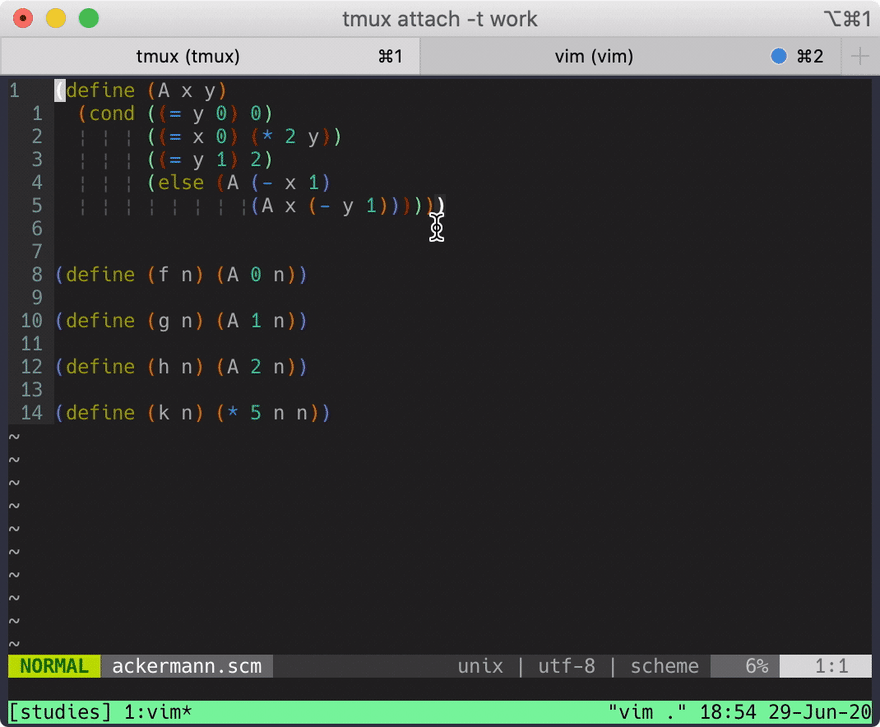
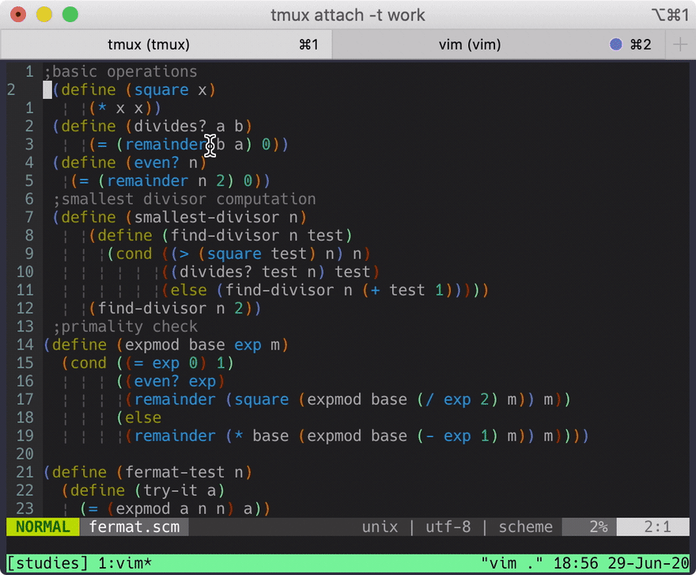
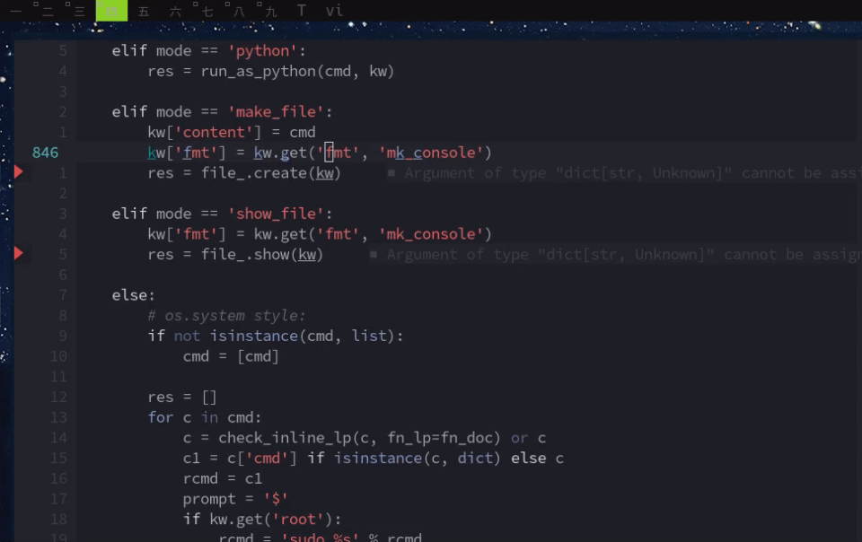
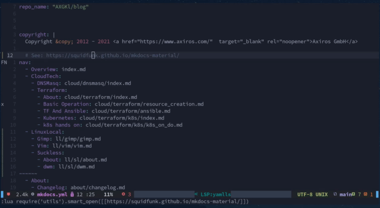
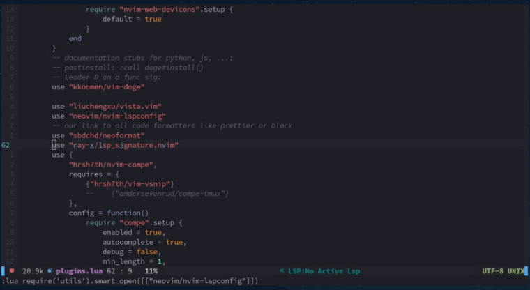

(Neo)Vim¤
After a few intense rounds with emacs and vscode I'm back to vim, specifically NeoVim.
For publishing papers I'd stick to doom emacs and org -> latex -> pdf, but for the rest I'm in vim.
There are two game changers why I think: vim is not "better" than emacs - but there are no killer features for normal text editing left, available only in emacs.
Game Changers¤
fzf-vim¤
 
fzf really simplifies tons of operations involving lists: Matching files, commits, colorschemes, buffers, ripgrep results, whatever - it all is now at your fingertips in a convenient, lighting fast, fuzzy finding interface.
Meanwhile there is an alternative with Telescope - but for me FZF is still the better working tool. Battle proven.
Lua¤
The big plus for emacs was that elisp >> vimscript. But now with lua that changed. We have a real programming language now and integration with vim is first class!
Hacks¤
I won't discuss all my config, just a few hacks of myself, maybe of interest to others.
Python¤
$ bat -f --terminal-width=200 ~/.config/nvim/ftplugin/python.vim
$ bat -f --terminal-width=200 ~/.config/nvim/ftplugin/python.vim
[38;5;238m───────┬────────────────────────────────────────────────────────────────────────────────────────────────────────────────────────────────────────────────────────────────────────────────────────────────[0m
[38;5;238m│ [0mFile: [1m/home/gk/.config/nvim/ftplugin/python.vim[0m
[38;5;238m───────┼────────────────────────────────────────────────────────────────────────────────────────────────────────────────────────────────────────────────────────────────────────────────────────────────[0m
[38;5;238m 1[0m [38;5;238m│[0m [38;2;102;217;239msetlocal[0m[38;2;248;248;242m textwidth=[0m[38;2;190;132;255m88[0m
[38;5;238m 2[0m [38;5;238m│[0m [38;2;102;217;239msetlocal[0m[38;2;248;248;242m foldmethod=indent[0m
[38;5;238m 3[0m [38;5;238m│[0m [38;2;102;217;239msetlocal[0m[38;2;248;248;242m foldlevel=[0m[38;2;190;132;255m99[0m
[38;5;238m 4[0m [38;5;238m│[0m [38;2;102;217;239mlet[0m[38;2;248;248;242m [0m[38;2;255;255;255mg:SimpylFold_docstring_preview[0m[38;2;248;248;242m = [0m[38;2;190;132;255m1[0m
[38;5;238m 5[0m [38;5;238m│[0m [38;2;102;217;239mmap[0m[38;2;248;248;242m ,b [0m[38;2;102;217;239mObreakpoint[0m[38;2;248;248;242m() # FIXME BREAKPOINT[0m[38;2;166;226;46m<C-c>[0m
[38;5;238m 6[0m [38;5;238m│[0m [38;2;102;217;239mmap[0m[38;2;248;248;242m ,e Otry:[0m[38;2;166;226;46m<Esc>[0m[38;2;248;248;242mj^i[0m[38;2;166;226;46m<TAB>[0m[38;2;166;226;46m<Esc>[0m[38;2;248;248;242moexcept Exception as ex:[0m[38;2;166;226;46m<CR>[0m[38;2;102;217;239mprint[0m[38;2;248;248;242m([0m[38;2;230;219;116m'breakpoint set'[0m[38;2;248;248;242m)[0m[38;2;166;226;46m<CR>[0m[38;2;102;217;239mbreakpoint[0m[38;2;248;248;242m()[0m[38;2;166;226;46m<CR>[0m[38;2;248;248;242mkeep_ctx=True[0m[38;2;166;226;46m<Esc>[0m[38;2;248;248;242m^[0m
[38;5;238m 7[0m [38;5;238m│[0m [38;2;102;217;239msetlocal[0m[38;2;248;248;242m [0m[38;2;102;217;239mexpandtab[0m
[38;5;238m 8[0m [38;5;238m│[0m [38;2;102;217;239msetlocal[0m[38;2;248;248;242m shiftwidth=[0m[38;2;190;132;255m4[0m
[38;5;238m 9[0m [38;5;238m│[0m [38;2;102;217;239msetlocal[0m[38;2;248;248;242m softtabstop=[0m[38;2;190;132;255m4[0m
[38;5;238m 10[0m [38;5;238m│[0m [38;2;117;113;94m" on demand, pyright LSP is just the right amount of information for me:[0m
[38;5;238m 11[0m [38;5;238m│[0m [38;2;248;248;242m:ALEDisable[0m
[38;5;238m 12[0m [38;5;238m│[0m
[38;5;238m 13[0m [38;5;238m│[0m
[38;5;238m───────┴────────────────────────────────────────────────────────────────────────────────────────────────────────────────────────────────────────────────────────────────────────────────────────────────[0m
Wrapping of code into try except blocks: 
(AX)Black¤
Simple running axblack as external program on the current buffer, e.g. at save (,w) has a big
downside: All your jump marks are gone.
First I solved this by using efm-lsp and Lukas Reineke's approach.
But I found that NeoFormat does the job quite well, they trick nvim into a line by line mode when formatting - so all marks are preserved and single-transaction undos can also be made working via a modified undojoin:
--vim.cmd [[autocmd BufWritePre * undojoin | Neoformat]] --but https://github.com/sbdchd/neoformat/issues/134
vim.cmd [[ au BufWritePre * try | undojoin | Neoformat | catch /^Vim\%((\a\+)\)\=:E790/ | finally | silent Neoformat | endtry ]]
Here I set a mark (b), show LSP completion, then write a double quoted value. Then reformat (on save), then jump back to the mark. Then I undo all
transactions:

Neoformat's approach also works for other language formatters, clear. See their list of supported formatters.
Useful(?) in General¤
Color Picker¤
This is my version - scans all available colorschemes and toggles transparency as well:

When set as default it writes a file which is sourced by init.vim.
$ bat -f /home/gk/.config/nvim/lua/colorpicker.lua
$ bat -f /home/gk/.config/nvim/lua/colorpicker.lua
[38;5;238m───────┬────────────────────────────────────────────────────────────────────────[0m
[38;5;238m│ [0mFile: [1m/home/gk/.config/nvim/lua/colorpicker.lua[0m
[38;5;238m───────┼────────────────────────────────────────────────────────────────────────[0m
[38;5;238m 1[0m [38;5;238m│[0m [38;2;249;38;114mlocal[0m[38;2;248;248;242m [0m[38;2;255;255;255mfzf[0m[38;2;248;248;242m [0m[38;2;249;38;114m=[0m[38;2;248;248;242m [0m[38;2;102;217;239mrequire[0m[38;2;248;248;242m [0m[38;2;230;219;116m"[0m[38;2;230;219;116mfzf[0m[38;2;230;219;116m"[0m[38;2;248;248;242m.[0m[38;2;248;248;242mfzf[0m
[38;5;238m 2[0m [38;5;238m│[0m [38;2;249;38;114mlocal[0m[38;2;248;248;242m [0m[38;2;255;255;255maction[0m[38;2;248;248;242m [0m[38;2;249;38;114m=[0m[38;2;248;248;242m [0m[38;2;102;217;239mrequire[0m[38;2;248;248;242m [0m[38;2;230;219;116m"[0m[38;2;230;219;116mfzf.actions[0m[38;2;230;219;116m"[0m[38;2;248;248;242m.[0m[38;2;248;248;242maction[0m
[38;5;238m 3[0m [38;5;238m│[0m [38;2;102;217;239mrequire[0m[38;2;248;248;242m [0m[38;2;230;219;116m"[0m[38;2;230;219;116mos[0m[38;2;230;219;116m"[0m
[38;5;238m 4[0m [38;5;238m│[0m
[38;5;238m 5[0m [38;5;238m│[0m [38;2;255;255;255mvim[0m[38;2;248;248;242m.[0m[38;2;248;248;242mg[0m[38;2;248;248;242m.[0m[38;2;248;248;242mbg_is_transp[0m[38;2;248;248;242m [0m[38;2;249;38;114m=[0m[38;2;248;248;242m [0m[38;2;190;132;255mfalse[0m
[38;5;238m 6[0m [38;5;238m│[0m
[38;5;238m 7[0m [38;5;238m│[0m [38;2;249;38;114mlocal[0m[38;2;248;248;242m [0m[38;2;102;217;239mfunction[0m[38;2;248;248;242m [0m[38;2;166;226;46mget_colorschemes[0m[38;2;248;248;242m([0m[38;2;248;248;242m)[0m
[38;5;238m 8[0m [38;5;238m│[0m [38;2;248;248;242m [0m[38;2;249;38;114mlocal[0m[38;2;248;248;242m [0m[38;2;255;255;255mcolorscheme_vim_files[0m[38;2;248;248;242m [0m[38;2;249;38;114m=[0m[38;2;248;248;242m [0m[38;2;255;255;255mvim[0m[38;2;248;248;242m.[0m[38;2;248;248;242mfn[0m[38;2;248;248;242m.[0m[38;2;248;248;242mglobpath[0m[38;2;248;248;242m([0m[38;2;255;255;255mvim[0m[38;2;248;248;242m.[0m[38;2;248;248;242mo[0m[38;2;248;248;242m.[0m[38;2;248;248;242mrtp[0m[38;2;248;248;242m,[0m[38;2;248;248;242m [0m[38;2;230;219;116m"[0m[38;2;230;219;116mcolors/*.vim[0m[38;2;230;219;116m"[0m[38;2;248;248;242m,[0m[38;2;248;248;242m [0m[38;2;190;132;255mtrue[0m[38;2;248;248;242m,[0m[38;2;248;248;242m [0m[38;2;190;132;255mtrue[0m[38;2;248;248;242m)[0m
[38;5;238m 9[0m [38;5;238m│[0m [38;2;248;248;242m [0m[38;2;249;38;114mlocal[0m[38;2;248;248;242m [0m[38;2;255;255;255mcolorschemes[0m[38;2;248;248;242m [0m[38;2;249;38;114m=[0m[38;2;248;248;242m [0m[38;2;248;248;242m{[0m[38;2;248;248;242m}[0m
[38;5;238m 10[0m [38;5;238m│[0m [38;2;248;248;242m [0m[38;2;102;217;239mtable[0m[38;2;248;248;242m.[0m[38;2;102;217;239minsert[0m[38;2;248;248;242m([0m[38;2;255;255;255mcolorschemes[0m[38;2;248;248;242m,[0m[38;2;248;248;242m [0m[38;2;255;255;255mvim[0m[38;2;248;248;242m.[0m[38;2;248;248;242mg[0m[38;2;248;248;242m.[0m[38;2;248;248;242mcolors_name[0m[38;2;248;248;242m)[0m[38;2;248;248;242m [0m[38;2;117;113;94m--[0m[38;2;117;113;94m first one selected[0m
[38;5;238m 11[0m [38;5;238m│[0m [38;2;248;248;242m [0m[38;2;249;38;114mfor[0m[38;2;248;248;242m [0m[38;2;255;255;255m_[0m[38;2;248;248;242m,[0m[38;2;248;248;242m [0m[38;2;255;255;255mcolorscheme_file[0m[38;2;248;248;242m [0m[38;2;249;38;114min[0m[38;2;248;248;242m [0m[38;2;102;217;239mipairs[0m[38;2;248;248;242m([0m[38;2;255;255;255mcolorscheme_vim_files[0m[38;2;248;248;242m)[0m[38;2;248;248;242m [0m[38;2;249;38;114mdo[0m
[38;5;238m 12[0m [38;5;238m│[0m [38;2;248;248;242m [0m[38;2;249;38;114mlocal[0m[38;2;248;248;242m [0m[38;2;255;255;255mcolorscheme[0m[38;2;248;248;242m [0m[38;2;249;38;114m=[0m[38;2;248;248;242m [0m[38;2;255;255;255mvim[0m[38;2;248;248;242m.[0m[38;2;248;248;242mfn[0m[38;2;248;248;242m.[0m[38;2;248;248;242mfnamemodify[0m[38;2;248;248;242m([0m[38;2;255;255;255mcolorscheme_file[0m[38;2;248;248;242m,[0m[38;2;248;248;242m [0m[38;2;230;219;116m"[0m[38;2;230;219;116m:t:r[0m[38;2;230;219;116m"[0m[38;2;248;248;242m)[0m
[38;5;238m 13[0m [38;5;238m│[0m [38;2;248;248;242m [0m[38;2;102;217;239mtable[0m[38;2;248;248;242m.[0m[38;2;102;217;239minsert[0m[38;2;248;248;242m([0m[38;2;255;255;255mcolorschemes[0m[38;2;248;248;242m,[0m[38;2;248;248;242m [0m[38;2;255;255;255mcolorscheme[0m[38;2;248;248;242m)[0m
[38;5;238m 14[0m [38;5;238m│[0m [38;2;248;248;242m [0m[38;2;249;38;114mend[0m
[38;5;238m 15[0m [38;5;238m│[0m [38;2;248;248;242m [0m[38;2;249;38;114mreturn[0m[38;2;248;248;242m [0m[38;2;255;255;255mcolorschemes[0m
[38;5;238m 16[0m [38;5;238m│[0m [38;2;249;38;114mend[0m
[38;5;238m 17[0m [38;5;238m│[0m
[38;5;238m 18[0m [38;5;238m│[0m [38;2;249;38;114mlocal[0m[38;2;248;248;242m [0m[38;2;102;217;239mfunction[0m[38;2;248;248;242m [0m[38;2;166;226;46mtoggle_background_transparency[0m[38;2;248;248;242m([0m[38;2;253;151;31mtoggle[0m[38;2;248;248;242m)[0m
[38;5;238m 19[0m [38;5;238m│[0m [38;2;248;248;242m [0m[38;2;117;113;94m--[0m[38;2;117;113;94m when toggle is set we change, otherwise we set it transparent when it should be (required after colorscheme change)[0m
[38;5;238m 20[0m [38;5;238m│[0m [38;2;248;248;242m [0m[38;2;249;38;114mif[0m[38;2;248;248;242m [0m[38;2;255;255;255mvim[0m[38;2;248;248;242m.[0m[38;2;248;248;242mg[0m[38;2;248;248;242m.[0m[38;2;248;248;242mbg_is_transp[0m[38;2;248;248;242m [0m[38;2;249;38;114m==[0m[38;2;248;248;242m [0m[38;2;190;132;255mtrue[0m[38;2;248;248;242m [0m[38;2;249;38;114mthen[0m
[38;5;238m 21[0m [38;5;238m│[0m [38;2;248;248;242m [0m[38;2;117;113;94m--[0m[38;2;117;113;94mos.execute("notify-send toggle")[0m
[38;5;238m 22[0m [38;5;238m│[0m [38;2;248;248;242m [0m[38;2;255;255;255mvim[0m[38;2;248;248;242m.[0m[38;2;248;248;242mg[0m[38;2;248;248;242m.[0m[38;2;248;248;242mbg_is_transp[0m[38;2;248;248;242m [0m[38;2;249;38;114m=[0m[38;2;248;248;242m [0m[38;2;190;132;255mfalse[0m
[38;5;238m 23[0m [38;5;238m│[0m [38;2;248;248;242m [0m[38;2;255;255;255mvim[0m[38;2;248;248;242m.[0m[38;2;248;248;242mcmd[0m[38;2;248;248;242m([0m[38;2;230;219;116m"[0m[38;2;230;219;116mcolorscheme [0m[38;2;230;219;116m"[0m[38;2;248;248;242m [0m[38;2;249;38;114m..[0m[38;2;248;248;242m [0m[38;2;248;248;242mget_current_colorscheme[0m[38;2;248;248;242m([0m[38;2;248;248;242m)[0m[38;2;248;248;242m)[0m
[38;5;238m 24[0m [38;5;238m│[0m [38;2;248;248;242m [0m[38;2;249;38;114melse[0m
[38;5;238m 25[0m [38;5;238m│[0m [38;2;248;248;242m [0m[38;2;255;255;255mvim[0m[38;2;248;248;242m.[0m[38;2;248;248;242mg[0m[38;2;248;248;242m.[0m[38;2;248;248;242mbg_is_transp[0m[38;2;248;248;242m [0m[38;2;249;38;114m=[0m[38;2;248;248;242m [0m[38;2;190;132;255mtrue[0m
[38;5;238m 26[0m [38;5;238m│[0m [38;2;248;248;242m [0m[38;2;255;255;255mvim[0m[38;2;248;248;242m.[0m[38;2;248;248;242mcmd[0m[38;2;248;248;242m([0m[38;2;230;219;116m"[0m[38;2;230;219;116mhi Normal guibg=NONE ctermbg=NONE[0m[38;2;230;219;116m"[0m[38;2;248;248;242m)[0m
[38;5;238m 27[0m [38;5;238m│[0m [38;2;248;248;242m [0m[38;2;249;38;114mend[0m
[38;5;238m 28[0m [38;5;238m│[0m [38;2;249;38;114mend[0m
[38;5;238m 29[0m [38;5;238m│[0m
[38;5;238m 30[0m [38;5;238m│[0m [38;2;102;217;239mfunction[0m[38;2;248;248;242m [0m[38;2;166;226;46mget_current_colorscheme[0m[38;2;248;248;242m([0m[38;2;248;248;242m)[0m
[38;5;238m 31[0m [38;5;238m│[0m [38;2;248;248;242m [0m[38;2;249;38;114mif[0m[38;2;248;248;242m [0m[38;2;255;255;255mvim[0m[38;2;248;248;242m.[0m[38;2;248;248;242mg[0m[38;2;248;248;242m.[0m[38;2;248;248;242mcolors_name[0m[38;2;248;248;242m [0m[38;2;249;38;114mthen[0m
[38;5;238m 32[0m [38;5;238m│[0m [38;2;248;248;242m [0m[38;2;249;38;114mreturn[0m[38;2;248;248;242m [0m[38;2;255;255;255mvim[0m[38;2;248;248;242m.[0m[38;2;248;248;242mg[0m[38;2;248;248;242m.[0m[38;2;248;248;242mcolors_name[0m
[38;5;238m 33[0m [38;5;238m│[0m [38;2;248;248;242m [0m[38;2;249;38;114melse[0m
[38;5;238m 34[0m [38;5;238m│[0m [38;2;248;248;242m [0m[38;2;249;38;114mreturn[0m[38;2;248;248;242m [0m[38;2;230;219;116m"[0m[38;2;230;219;116mdefault[0m[38;2;230;219;116m"[0m[38;2;248;248;242m [0m[38;2;117;113;94m--[0m[38;2;117;113;94mnot all have the colors_name exposed[0m
[38;5;238m 35[0m [38;5;238m│[0m [38;2;248;248;242m [0m[38;2;249;38;114mend[0m
[38;5;238m 36[0m [38;5;238m│[0m [38;2;249;38;114mend[0m
[38;5;238m 37[0m [38;5;238m│[0m
[38;5;238m 38[0m [38;5;238m│[0m [38;2;102;217;239mfunction[0m[38;2;248;248;242m [0m[38;2;166;226;46mset_color_scheme[0m[38;2;248;248;242m([0m[38;2;253;151;31mname[0m[38;2;248;248;242m)[0m
[38;5;238m 39[0m [38;5;238m│[0m [38;2;248;248;242m [0m[38;2;255;255;255mvim[0m[38;2;248;248;242m.[0m[38;2;248;248;242mcmd[0m[38;2;248;248;242m([0m[38;2;230;219;116m"[0m[38;2;230;219;116mcolorscheme [0m[38;2;230;219;116m"[0m[38;2;248;248;242m [0m[38;2;249;38;114m..[0m[38;2;248;248;242m [0m[38;2;255;255;255mname[0m[38;2;248;248;242m)[0m
[38;5;238m 40[0m [38;5;238m│[0m [38;2;248;248;242m [0m[38;2;249;38;114mif[0m[38;2;248;248;242m [0m[38;2;255;255;255mvim[0m[38;2;248;248;242m.[0m[38;2;248;248;242mg[0m[38;2;248;248;242m.[0m[38;2;248;248;242mbg_is_transp[0m[38;2;248;248;242m [0m[38;2;249;38;114m==[0m[38;2;248;248;242m [0m[38;2;190;132;255mtrue[0m[38;2;248;248;242m [0m[38;2;249;38;114mthen[0m
[38;5;238m 41[0m [38;5;238m│[0m [38;2;248;248;242m [0m[38;2;255;255;255mvim[0m[38;2;248;248;242m.[0m[38;2;248;248;242mcmd[0m[38;2;248;248;242m([0m[38;2;230;219;116m"[0m[38;2;230;219;116mhi Normal guibg=NONE ctermbg=NONE[0m[38;2;230;219;116m"[0m[38;2;248;248;242m)[0m
[38;5;238m 42[0m [38;5;238m│[0m [38;2;248;248;242m [0m[38;2;249;38;114mend[0m
[38;5;238m 43[0m [38;5;238m│[0m [38;2;249;38;114mend[0m
[38;5;238m 44[0m [38;5;238m│[0m
[38;5;238m 45[0m [38;5;238m│[0m [38;2;102;217;239mcoroutine[0m[38;2;248;248;242m.[0m[38;2;102;217;239mwrap[0m[38;2;248;248;242m([0m
[38;5;238m 46[0m [38;5;238m│[0m [38;2;248;248;242m [0m[38;2;102;217;239mfunction[0m[38;2;248;248;242m([0m[38;2;248;248;242m)[0m
[38;5;238m 47[0m [38;5;238m│[0m [38;2;248;248;242m [0m[38;2;249;38;114mlocal[0m[38;2;248;248;242m [0m[38;2;255;255;255mpreview_function[0m[38;2;248;248;242m [0m[38;2;249;38;114m=[0m
[38;5;238m 48[0m [38;5;238m│[0m [38;2;248;248;242m [0m[38;2;248;248;242maction[0m[38;2;248;248;242m([0m
[38;5;238m 49[0m [38;5;238m│[0m [38;2;248;248;242m [0m[38;2;102;217;239mfunction[0m[38;2;248;248;242m([0m[38;2;253;151;31margs[0m[38;2;248;248;242m)[0m
[38;5;238m 50[0m [38;5;238m│[0m [38;2;248;248;242m [0m[38;2;249;38;114mif[0m[38;2;248;248;242m [0m[38;2;255;255;255margs[0m[38;2;248;248;242m [0m[38;2;249;38;114mthen[0m
[38;5;238m 51[0m [38;5;238m│[0m [38;2;248;248;242m [0m[38;2;248;248;242mset_color_scheme[0m[38;2;248;248;242m([0m[38;2;255;255;255margs[0m[38;2;248;248;242m[[0m[38;2;190;132;255m1[0m[38;2;248;248;242m][0m[38;2;248;248;242m)[0m
[38;5;238m 52[0m [38;5;238m│[0m [38;2;248;248;242m [0m[38;2;249;38;114mend[0m
[38;5;238m 53[0m [38;5;238m│[0m [38;2;248;248;242m [0m[38;2;249;38;114mend[0m
[38;5;238m 54[0m [38;5;238m│[0m [38;2;248;248;242m [0m[38;2;248;248;242m)[0m
[38;5;238m 55[0m [38;5;238m│[0m [38;2;248;248;242m [0m[38;2;249;38;114mwhile[0m[38;2;248;248;242m [0m[38;2;248;248;242m([0m[38;2;190;132;255m1[0m[38;2;248;248;242m [0m[38;2;249;38;114m==[0m[38;2;248;248;242m [0m[38;2;190;132;255m1[0m[38;2;248;248;242m)[0m[38;2;248;248;242m [0m[38;2;249;38;114mdo[0m
[38;5;238m 56[0m [38;5;238m│[0m [38;2;248;248;242m [0m[38;2;249;38;114mlocal[0m[38;2;248;248;242m [0m[38;2;255;255;255mcurrent_colorscheme[0m[38;2;248;248;242m [0m[38;2;249;38;114m=[0m[38;2;248;248;242m [0m[38;2;248;248;242mget_current_colorscheme[0m[38;2;248;248;242m([0m[38;2;248;248;242m)[0m
[38;5;238m 57[0m [38;5;238m│[0m [38;2;248;248;242m [0m[38;2;117;113;94m--[0m[38;2;117;113;94m os.execute ('notify-send ' .. current_colorscheme)[0m
[38;5;238m 58[0m [38;5;238m│[0m [38;2;248;248;242m [0m[38;2;249;38;114mlocal[0m[38;2;248;248;242m [0m[38;2;255;255;255mchoices[0m[38;2;248;248;242m [0m[38;2;249;38;114m=[0m
[38;5;238m 59[0m [38;5;238m│[0m [38;2;248;248;242m [0m[38;2;248;248;242mfzf[0m[38;2;248;248;242m([0m
[38;5;238m 60[0m [38;5;238m│[0m [38;2;248;248;242m [0m[38;2;248;248;242mget_colorschemes[0m[38;2;248;248;242m([0m[38;2;248;248;242m)[0m[38;2;248;248;242m,[0m
[38;5;238m 61[0m [38;5;238m│[0m [38;2;248;248;242m [0m[38;2;230;219;116m"[0m[38;2;230;219;116m--header='b to toggle transp[0m[38;2;190;132;255m\n[0m[38;2;230;219;116mD: set as default' --preview=[0m[38;2;230;219;116m"[0m[38;2;248;248;242m [0m[38;2;249;38;114m..[0m
[38;5;238m 62[0m [38;5;238m│[0m [38;2;248;248;242m [0m[38;2;255;255;255mpreview_function[0m[38;2;248;248;242m [0m[38;2;249;38;114m..[0m[38;2;248;248;242m [0m[38;2;230;219;116m"[0m[38;2;230;219;116m --preview-window right:0 --bind=j:down,k:up,q:abort --expect=b --expect=D[0m[38;2;230;219;116m"[0m[38;2;248;248;242m,[0m
[38;5;238m 63[0m [38;5;238m│[0m [38;2;248;248;242m [0m[38;2;248;248;242m{[0m[38;2;230;219;116mheight[0m[38;2;248;248;242m [0m[38;2;248;248;242m=[0m[38;2;248;248;242m [0m[38;2;255;255;255mvim[0m[38;2;248;248;242m.[0m[38;2;248;248;242mo[0m[38;2;248;248;242m.[0m[38;2;248;248;242mlines[0m[38;2;248;248;242m [0m[38;2;249;38;114m-[0m[38;2;248;248;242m [0m[38;2;190;132;255m10[0m[38;2;248;248;242m,[0m[38;2;248;248;242m [0m[38;2;230;219;116mwidth[0m[38;2;248;248;242m [0m[38;2;248;248;242m=[0m[38;2;248;248;242m [0m[38;2;190;132;255m30[0m[38;2;248;248;242m,[0m[38;2;248;248;242m [0m[38;2;230;219;116mrow[0m[38;2;248;248;242m [0m[38;2;248;248;242m=[0m[38;2;248;248;242m [0m[38;2;190;132;255m1[0m[38;2;248;248;242m}[0m
[38;5;238m 64[0m [38;5;238m│[0m [38;2;248;248;242m [0m[38;2;248;248;242m)[0m
[38;5;238m 65[0m [38;5;238m│[0m [38;2;248;248;242m [0m[38;2;249;38;114mif[0m[38;2;248;248;242m [0m[38;2;249;38;114mnot[0m[38;2;248;248;242m [0m[38;2;255;255;255mchoices[0m[38;2;248;248;242m [0m[38;2;249;38;114mthen[0m
[38;5;238m 66[0m [38;5;238m│[0m [38;2;248;248;242m [0m[38;2;255;255;255mvim[0m[38;2;248;248;242m.[0m[38;2;248;248;242mcmd[0m[38;2;248;248;242m([0m[38;2;230;219;116m"[0m[38;2;230;219;116mcolorscheme [0m[38;2;230;219;116m"[0m[38;2;248;248;242m [0m[38;2;249;38;114m..[0m[38;2;248;248;242m [0m[38;2;255;255;255mcurrent_colorscheme[0m[38;2;248;248;242m)[0m
[38;5;238m 67[0m [38;5;238m│[0m [38;2;248;248;242m [0m[38;2;249;38;114mbreak[0m
[38;5;238m 68[0m [38;5;238m│[0m [38;2;248;248;242m [0m[38;2;249;38;114melse[0m
[38;5;238m 69[0m [38;5;238m│[0m [38;2;248;248;242m [0m[38;2;249;38;114mif[0m[38;2;248;248;242m [0m[38;2;255;255;255mchoices[0m[38;2;248;248;242m[[0m[38;2;190;132;255m1[0m[38;2;248;248;242m][0m[38;2;248;248;242m [0m[38;2;249;38;114m==[0m[38;2;248;248;242m [0m[38;2;230;219;116m"[0m[38;2;230;219;116mb[0m[38;2;230;219;116m"[0m[38;2;248;248;242m [0m[38;2;249;38;114mthen[0m
[38;5;238m 70[0m [38;5;238m│[0m [38;2;248;248;242m [0m[38;2;248;248;242mtoggle_background_transparency[0m[38;2;248;248;242m([0m[38;2;248;248;242m)[0m
[38;5;238m 71[0m [38;5;238m│[0m [38;2;248;248;242m [0m[38;2;249;38;114melseif[0m[38;2;248;248;242m [0m[38;2;255;255;255mchoices[0m[38;2;248;248;242m[[0m[38;2;190;132;255m1[0m[38;2;248;248;242m][0m[38;2;248;248;242m [0m[38;2;249;38;114m==[0m[38;2;248;248;242m [0m[38;2;230;219;116m"[0m[38;2;230;219;116mD[0m[38;2;230;219;116m"[0m[38;2;248;248;242m [0m[38;2;249;38;114mthen[0m
[38;5;238m 72[0m [38;5;238m│[0m [38;2;248;248;242m [0m[38;2;249;38;114mlocal[0m[38;2;248;248;242m [0m[38;2;255;255;255mfn[0m[38;2;248;248;242m [0m[38;2;249;38;114m=[0m[38;2;248;248;242m [0m[38;2;230;219;116m"[0m[38;2;230;219;116m/home/gk/.config/nvim/cur_colorscheme.vim[0m[38;2;230;219;116m"[0m
[38;5;238m 73[0m [38;5;238m│[0m [38;2;248;248;242m [0m[38;2;249;38;114mlocal[0m[38;2;248;248;242m [0m[38;2;255;255;255mfile[0m[38;2;248;248;242m [0m[38;2;249;38;114m=[0m[38;2;248;248;242m [0m[38;2;102;217;239mio[0m[38;2;248;248;242m.[0m[38;2;102;217;239mopen[0m[38;2;248;248;242m([0m[38;2;255;255;255mfn[0m[38;2;248;248;242m,[0m[38;2;248;248;242m [0m[38;2;230;219;116m"[0m[38;2;230;219;116mw[0m[38;2;230;219;116m"[0m[38;2;248;248;242m)[0m
[38;5;238m 74[0m [38;5;238m│[0m [38;2;248;248;242m [0m[38;2;255;255;255mfile[0m[38;2;248;248;242m:[0m[38;2;248;248;242mwrite[0m[38;2;248;248;242m([0m[38;2;230;219;116m"[0m[38;2;230;219;116mcolorscheme [0m[38;2;230;219;116m"[0m[38;2;248;248;242m [0m[38;2;249;38;114m..[0m[38;2;248;248;242m [0m[38;2;255;255;255mchoices[0m[38;2;248;248;242m[[0m[38;2;190;132;255m2[0m[38;2;248;248;242m][0m[38;2;248;248;242m)[0m
[38;5;238m 75[0m [38;5;238m│[0m [38;2;248;248;242m [0m[38;2;255;255;255mfile[0m[38;2;248;248;242m:[0m[38;2;248;248;242mclose[0m[38;2;248;248;242m([0m[38;2;248;248;242m)[0m
[38;5;238m 76[0m [38;5;238m│[0m [38;2;248;248;242m [0m[38;2;102;217;239mos[0m[38;2;248;248;242m.[0m[38;2;102;217;239mexecute[0m[38;2;248;248;242m([0m[38;2;230;219;116m"[0m[38;2;230;219;116mnotify-send 'colorscheme written [0m[38;2;230;219;116m"[0m[38;2;248;248;242m [0m[38;2;249;38;114m..[0m[38;2;248;248;242m [0m[38;2;255;255;255mchoices[0m[38;2;248;248;242m[[0m[38;2;190;132;255m2[0m[38;2;248;248;242m][0m[38;2;248;248;242m [0m[38;2;249;38;114m..[0m[38;2;248;248;242m [0m[38;2;230;219;116m"[0m[38;2;230;219;116m' '[0m[38;2;230;219;116m"[0m[38;2;248;248;242m [0m[38;2;249;38;114m..[0m[38;2;248;248;242m [0m[38;2;255;255;255mfn[0m[38;2;248;248;242m [0m[38;2;249;38;114m..[0m[38;2;248;248;242m [0m[38;2;230;219;116m"[0m[38;2;230;219;116m'[0m[38;2;230;219;116m"[0m[38;2;248;248;242m)[0m
[38;5;238m 77[0m [38;5;238m│[0m [38;2;248;248;242m [0m[38;2;248;248;242mset_color_scheme[0m[38;2;248;248;242m([0m[38;2;255;255;255mchoices[0m[38;2;248;248;242m[[0m[38;2;190;132;255m2[0m[38;2;248;248;242m][0m[38;2;248;248;242m)[0m
[38;5;238m 78[0m [38;5;238m│[0m [38;2;248;248;242m [0m[38;2;249;38;114mbreak[0m
[38;5;238m 79[0m [38;5;238m│[0m [38;2;248;248;242m [0m[38;2;249;38;114melse[0m
[38;5;238m 80[0m [38;5;238m│[0m [38;2;248;248;242m [0m[38;2;248;248;242mset_color_scheme[0m[38;2;248;248;242m([0m[38;2;255;255;255mchoices[0m[38;2;248;248;242m[[0m[38;2;190;132;255m2[0m[38;2;248;248;242m][0m[38;2;248;248;242m)[0m
[38;5;238m 81[0m [38;5;238m│[0m [38;2;248;248;242m [0m[38;2;249;38;114mbreak[0m
[38;5;238m 82[0m [38;5;238m│[0m [38;2;248;248;242m [0m[38;2;249;38;114mend[0m
[38;5;238m 83[0m [38;5;238m│[0m [38;2;248;248;242m [0m[38;2;249;38;114mend[0m
[38;5;238m 84[0m [38;5;238m│[0m [38;2;248;248;242m [0m[38;2;249;38;114mend[0m
[38;5;238m 85[0m [38;5;238m│[0m [38;2;248;248;242m [0m[38;2;249;38;114mend[0m
[38;5;238m 86[0m [38;5;238m│[0m [38;2;248;248;242m)[0m[38;2;248;248;242m([0m[38;2;248;248;242m)[0m
[38;5;238m───────┴────────────────────────────────────────────────────────────────────────[0m
Smart Goto¤
Example use case: We want to open the preprocessing source files for markdown, as soon as ,g is
invoked on a link to its rendering result, e.g. in mkdocs.yml's nav section. The file can be anywhere in the whole subtree, i.e. in
the docs folder...
When the selection is URL or a file not findable in the subtree we open in the browser:

- Cursor over word or visual selection
,g=> open in nvim or browser
Functioning
Result: A python script gets the word under cursor or visual selection and can decide if to open the word as a new vim buffer or send it to the browser as URL or as google search string.
That can naturally be all done in lua but I wanted to quickly change the decisioning process - and I'm not fit enough in lua to do that on the fly.
So there is the following lua python integration: In lua we use the vim api to get the current word / URL or vis selection, write that to a file, syncronously call a python subprocess and read back what it wrote into that file, than open it in vim. If there was nothing written, then we do nothing. The latter happens, when python already calls the browser.
" Universal scriptable file or browser opener over word:
nmap ,g viW"ay:lua require('utils').smart_open([[<C-R>a]])<CR><CR>
vmap ,g :lua require('utils').smart_open([[visualsel]])<CR><CR>
local function visual_selection_range()
local _, csrow, cscol, _ = unpack(vim.fn.getpos("'<"))
local _, cerow, cecol, _ = unpack(vim.fn.getpos("'>"))
if csrow < cerow or (csrow == cerow and cscol <= cecol) then
return csrow - 1, cscol - 1, cerow - 1, cecol
else
return cerow - 1, cecol - 1, csrow - 1, cscol
end
end
M.smart_open = function(arg)
-- gf opens anything openable. Calls a python app, which writes back if vim should open it
-- we have a vmap of ,g to this with arg "visualsel" -> get that selection from the buffer:
if arg == "visualsel" then
local csrow, cscol, cerow, cecol = visual_selection_range()
local l = vim.api.nvim_buf_get_lines(vim.api.nvim_get_current_buf(), csrow, csrow + 1, true)
arg = l[1]
arg = arg:sub(cscol, cecol)
end
local fn = "/tmp/smartopen"
local file = io.open(fn, "w")
io.output(file)
io.write(arg)
io.close(file)
os.execute(os.getenv("HOME") .. "/.config/nvim/smart_vi_open")
--local pth = arg --:gsub('"', "")
--pth = pth:gsub("'", "")
--pth = string.gsub(pth, "'", "")
file = io.open(fn, "r")
if file ~= nil then
io.input(file)
local s = io.read()
io.close(file)
os.execute("notify-send 'vi: " .. s .. "'")
vim.cmd("edit " .. s)
end
return ""
end
$ $ cat /home/gk/.config/nvim/smart_vi_open.py
#!/usr/bin/env python
"""
triggered from vim, by ,g on a word
We try hard to find a matching file and bring it up in vim
Else we open in browser.
"""
import os
import re
import sys
# http://heise.de
from html import escape
from pathlib import Path
browser = os.environ.get('BROWSER', 'microsoft-edge')
exists = os.path.exists
log = lambda s: open('/tmp/smartopen.log', 'a').write(
'\ncwd: %s; %s\n' % (os.getcwd(), s)
)
def notify(title, msg=''):
cmd = '''notify-send -t 10 "%s" "%s\n\n%s\nHelp: ,g on '?' or 'help'" &'''
os.system(cmd % (title, msg, __file__))
# 'foo/bar'
fn_from_lua = '/tmp/smartopen'
# '/etc/hosts'
die = lambda *a: sys.exit(0)
pth_join = lambda dir, fn: str(Path(dir).joinpath(Path(fn)))
browse = lambda lnk: os.system('%s "%s" >/dev/null 2>/dev/null &' % (browser, lnk))
def send_exit(fn):
"""vim opens fn now:"""
log('sending back: %s' % fn)
with open(fn_from_lua, 'w') as fd:
fd.write(fn)
die()
def validate_and_complete(m):
if not exists(m['fn']):
die(notify('bug: file does not exist: %s' % m['fn']))
log('parsed: %s' % str(m))
m['dir'] = os.path.abspath(os.path.dirname(m['fn']))
for spam in "'", '"':
m['word'] = m['word'].replace(spam, '')
def try_(f, **m):
k = '\n'.join(['- %s: %s' % (k, v) for k, v in m.items()])
k = '\n%s\n' % k
notify(f.__name__, k)
try:
f(**m)
except Exception as ex:
notify('Exception', str(ex))
def notify_help():
notify('Not word selected - showing help')
# bring up this file itself in vim
send_exit(__file__)
def is_no_word_under_cursor(word, fn, **kw):
if word:
return
if '/docs/' in fn and '/repos/' in fn and fn.endswith('.md'):
# starts the mkdocs server and opens browser on the page
notify('Calling opendocs (mkdocs serve)', msg=fn)
cmd = '/home/gk/bin/opendocs "%s" --browser >/dev/null 2>/dev/null'
os.system(cmd % fn)
else:
notify_help()
die()
def is_help(word, **kw):
if word == 'help' or word == '?':
send_exit(__file__)
def is_markdown_link(word, dir, **kw):
# word = '[foo](bar.md)' ? then find or create it:
# first [ missing from vim, when its like [**foo**](./bar.md):
m = re.match(r'.*(.*\])(\(.*\)).*', word)
if not m:
return
title = m.groups()[0][1:-1]
lnk = m.groups()[1][1:-1]
if '://' in lnk:
die(browse(lnk))
if not lnk.strip():
if title.strip():
die(browse(title))
die()
# (./parameters.md#section)
lnk = lnk.split('#', 1)[0]
if lnk.endswith('/'):
pth = pth_join(dir, lnk + 'index.md')
if exists(pth):
lnk += 'index.md'
if not lnk.endswith('.md'):
die(browse(title + lnk))
pth = pth_join(dir, lnk)
if not exists(pth):
notify('Creating file', pth)
os.makedirs(os.path.dirname(pth), exist_ok=True)
with open(pth, 'w') as fd:
fd.write('# %s' % title)
send_exit(pth)
def is_absolute_path(word, **kw):
if exists(word):
send_exit(word)
def is_relative_path(word, dir, fn, **kw):
f = pth_join(dir, word)
if exists(f):
send_exit(f)
d = dir + '/docs'
if word.endswith('.md') and exists(d):
try_(is_relative_path, **dict(dir=d, word=word, fn=fn))
# search everything:
# def is_fd(s):
# if s.startswith('.'):
# s = s.rsplit('/', 1)[-1]
# cmd = 'fd --max-results=1 "%s$"' % s
# log('got cmd: %s' % cmd)
# fn = os.popen(cmd).read()
# log('got fn: %s' % fn)
# if exists(fn.strip()):
# send_exit(fn)
def remove_brackets_around_word(m):
word = m['word']
# remove all brackets:
# resolves "[title](./file.md)": ( before [:
for k in "''", '""', '()', '[]', '{}':
word = word.replace(k, '')
while k[0] in word:
# log(k + s)
word = word.split(k[0], 1)[1]
word = word.split(k[1], 1)[0]
m['word'] = word
def main():
with open(fn_from_lua) as fd:
expression = fd.read().strip()
log('got string: ' + expression)
os.unlink(fn_from_lua)
m = {'word': '', 'fn': ''}
for k in m:
m[k] = expression.split(':-:%s:-:' % k, 1)[1].split(':-:', 1)[0].strip()
validate_and_complete(m)
try_(is_no_word_under_cursor, **m)
try_(is_help, **m)
try_(is_markdown_link, **m)
try_(is_absolute_path, **m)
try_(is_relative_path, **m)
remove_brackets_around_word(m)
# search the whole fckng directory tree:
# try_fd(word)
word = m['word']
# Ok, no meaningful file match => look it up in the internet:
if 'http' in word:
word = 'http' + word.split('http', 1)[1]
# special case foo/bar , e.g. in plugins. Then github:
elif len(word.split('/')) == 2:
word = 'https://github.com/' + word
else:
o = word
word = 'https://www.google.com/search?client=%s-b-d&q=' + word
notify('Not found: %s' % o, 'Opening %s' % word)
die(browse(word))
if __name__ == '__main__':
main()
Other use case:
When the word under cursor is "foo/bar" we search github for a repo and open in browser:

Plugin Usage Hints¤
Stuff I keep forgetting that I have - maybe writing it down helps remembering:
replace with register¤
replacing from previous yank (or general register)
[2021-08-22 14:01]
- yank st
- say: grtx and it will insert yanked stuff from cursor to next x
- grr replaces hole line
-
Favorite Plugins¤
Ultisnips got an own page
| Tool | What |
|---|---|
| folke/which-key.nvim | Absolutely amazing tool. Shows me all possible keybindings. Closes a huge gap to emacs. |
| voldikss/vim-floatterm | Shell integration key. |
| wbthomason/packer.nvim | Current Plugin Manager. Not sure if better than vim-plug. But as good. |
| liuchengxu/vista.vim | View and search LSP symbols, tags in Vim/NeoVim. |
| neovim/nvim-lspconfig | LSP default, no more coc. Coc was good though. |
| sbdchd/neoformat | Formatting via external tools but w/o breaking marks |
| glepnir/lspsaga.nvim | LSP Features like rename and reference lookups |
| nvim-treesitter/nvim-treesitter-refactor | --shows current scope usages and can rename symbol in buffer Not in use, breaks sometimes indentation. Waiting for fix. |
| vijaymarupudi/nvim-fzf | --lua bindings. |
| kdheepak/lazygit.nvim | lazygit integration |
| tpope/vim-commentary | |
| tpope/vim-rhubarb | -- :Gbrowse -> open browser in current gh repo. also autocompletes issues ... |
| tpope/vim-surround | -- ysiw -> foo -> foo* |
| tpope/vim-repeat | |
| tpope/vim-eunuch | --:Rename :Move :Delete |
| tpope/vim-obsession | -- :mksession |
| tpope/vim-sleuth | -- automatically adjusts 'shiftwidth' and 'expandtab' heuristically based on the current file, |
| krisajenkins/vim-projectlocal | --project local .vimrc files |
| godlygeek/tabular | Smart alignment |
| dense-analysis/ale | currently mainly for bash scripting, overwhelming in python, while coding |
| folke/trouble.nvim | Fix all troubled code places. |
| folke/lsp-colors.nvim | Tons of new colors for LSP related situations |
| iamcco/markdown-preview.nvim | Real time markdown previewer |
| farmergreg/vim-lastplace | Stores last edit location perfectly |
| Here all plugins in my nvim: |
$ bat -f --terminal-width=200 /home/gk/.config/nvim/lua/plugins.lua
$ bat -f --terminal-width=200 /home/gk/.config/nvim/lua/plugins.lua
[38;5;238m───────┬────────────────────────────────────────────────────────────────────────────────────────────────────────────────────────────────────────────────────────────────────────────────────────────────[0m
[38;5;238m│ [0mFile: [1m/home/gk/.config/nvim/lua/plugins.lua[0m
[38;5;238m───────┼────────────────────────────────────────────────────────────────────────────────────────────────────────────────────────────────────────────────────────────────────────────────────────────────[0m
[38;5;238m 1[0m [38;5;238m│[0m [38;2;117;113;94m--[0m[38;2;117;113;94m plugins with keymappings[0m
[38;5;238m 2[0m [38;5;238m│[0m [38;2;117;113;94m--[0m[38;2;117;113;94m gh shortcut opens the links[0m
[38;5;238m 3[0m [38;5;238m│[0m [38;2;249;38;114mlocal[0m[38;2;248;248;242m [0m[38;2;255;255;255mmap[0m[38;2;248;248;242m [0m[38;2;249;38;114m=[0m[38;2;248;248;242m [0m[38;2;102;217;239mrequire[0m[38;2;248;248;242m [0m[38;2;230;219;116m"[0m[38;2;230;219;116mutils[0m[38;2;230;219;116m"[0m[38;2;248;248;242m.[0m[38;2;248;248;242mmap[0m
[38;5;238m 4[0m [38;5;238m│[0m [38;2;249;38;114mlocal[0m[38;2;248;248;242m [0m[38;2;255;255;255mleader[0m[38;2;248;248;242m [0m[38;2;249;38;114m=[0m[38;2;248;248;242m [0m[38;2;230;219;116m"[0m[38;2;230;219;116m<space>[0m[38;2;230;219;116m"[0m
[38;5;238m 5[0m [38;5;238m│[0m
[38;5;238m 6[0m [38;5;238m│[0m [38;2;117;113;94m--[0m[38;2;117;113;94mvim.g.loaded_netrwPlugin = false (gk: why did he have that - prevents gx?)[0m
[38;5;238m 7[0m [38;5;238m│[0m [38;2;255;255;255mvim[0m[38;2;248;248;242m.[0m[38;2;248;248;242mcmd[0m[38;2;248;248;242m [0m[38;2;230;219;116m[[[0m[38;2;230;219;116mpackadd cfilter[0m[38;2;230;219;116m]][0m
[38;5;238m 8[0m [38;5;238m│[0m
[38;5;238m 9[0m [38;5;238m│[0m [38;2;102;217;239mrequire[0m[38;2;248;248;242m([0m[38;2;230;219;116m"[0m[38;2;230;219;116mpacker[0m[38;2;230;219;116m"[0m[38;2;248;248;242m)[0m[38;2;248;248;242m.[0m[38;2;248;248;242mstartup[0m[38;2;248;248;242m([0m
[38;5;238m 10[0m [38;5;238m│[0m [38;2;248;248;242m [0m[38;2;102;217;239mfunction[0m[38;2;248;248;242m([0m[38;2;248;248;242m)[0m
[38;5;238m 11[0m [38;5;238m│[0m [38;2;248;248;242m [0m[38;2;248;248;242muse[0m[38;2;248;248;242m [0m[38;2;230;219;116m"[0m[38;2;230;219;116mwbthomason/packer.nvim[0m[38;2;230;219;116m"[0m
[38;5;238m 12[0m [38;5;238m│[0m
[38;5;238m 13[0m [38;5;238m│[0m [38;2;248;248;242m [0m[38;2;117;113;94m--[0m[38;2;117;113;94m use {[0m
[38;5;238m 14[0m [38;5;238m│[0m [38;2;248;248;242m [0m[38;2;117;113;94m--[0m[38;2;117;113;94m "haya14busa/incsearch.vim",[0m
[38;5;238m 15[0m [38;5;238m│[0m [38;2;248;248;242m [0m[38;2;117;113;94m--[0m[38;2;117;113;94m config = function()[0m
[38;5;238m 16[0m [38;5;238m│[0m [38;2;248;248;242m [0m[38;2;117;113;94m--[0m[38;2;117;113;94m vim.g["incsearch#auto_nohlsearch"] = true[0m
[38;5;238m 17[0m [38;5;238m│[0m [38;2;248;248;242m [0m[38;2;117;113;94m--[0m[38;2;117;113;94m vim.g["incsearch#magic"] = "\\v"[0m
[38;5;238m 18[0m [38;5;238m│[0m [38;2;248;248;242m [0m[38;2;117;113;94m--[0m[38;2;117;113;94m vim.g["incsearch#consistent_n_direction"] = true[0m
[38;5;238m 19[0m [38;5;238m│[0m [38;2;248;248;242m [0m[38;2;117;113;94m--[0m[38;2;117;113;94m vim.g["incsearch#do_not_save_error_message_history"] = true[0m
[38;5;238m 20[0m [38;5;238m│[0m [38;2;248;248;242m [0m[38;2;117;113;94m--[0m[38;2;117;113;94m end[0m
[38;5;238m 21[0m [38;5;238m│[0m [38;2;248;248;242m [0m[38;2;117;113;94m--[0m[38;2;117;113;94m }[0m
[38;5;238m 22[0m [38;5;238m│[0m
[38;5;238m 23[0m [38;5;238m│[0m [38;2;248;248;242m [0m[38;2;117;113;94m--[0m[38;2;117;113;94m Color scheme[0m
[38;5;238m 24[0m [38;5;238m│[0m [38;2;248;248;242m [0m[38;2;248;248;242muse[0m[38;2;248;248;242m [0m[38;2;248;248;242m{[0m
[38;5;238m 25[0m [38;5;238m│[0m [38;2;248;248;242m [0m[38;2;230;219;116m"[0m[38;2;230;219;116mAlessandroYorba/Despacio[0m[38;2;230;219;116m"[0m[38;2;248;248;242m,[0m
[38;5;238m 26[0m [38;5;238m│[0m [38;2;248;248;242m [0m[38;2;230;219;116m"[0m[38;2;230;219;116marcticicestudio/nord-vim[0m[38;2;230;219;116m"[0m[38;2;248;248;242m,[0m
[38;5;238m 27[0m [38;5;238m│[0m [38;2;248;248;242m [0m[38;2;230;219;116m"[0m[38;2;230;219;116mchriskempson/vim-tomorrow-theme[0m[38;2;230;219;116m"[0m[38;2;248;248;242m,[0m
[38;5;238m 28[0m [38;5;238m│[0m [38;2;248;248;242m [0m[38;2;230;219;116m"[0m[38;2;230;219;116mcocopon/iceberg.vim[0m[38;2;230;219;116m"[0m[38;2;248;248;242m,[0m
[38;5;238m 29[0m [38;5;238m│[0m [38;2;248;248;242m [0m[38;2;230;219;116m"[0m[38;2;230;219;116mmg979/vim-studio-dark[0m[38;2;230;219;116m"[0m[38;2;248;248;242m,[0m[38;2;248;248;242m [0m[38;2;117;113;94m--[0m[38;2;117;113;94m" , :colorscheme vsark[0m
[38;5;238m 30[0m [38;5;238m│[0m [38;2;248;248;242m [0m[38;2;230;219;116m"[0m[38;2;230;219;116mnavarasu/onedark.nvim[0m[38;2;230;219;116m"[0m[38;2;248;248;242m,[0m
[38;5;238m 31[0m [38;5;238m│[0m [38;2;248;248;242m [0m[38;2;230;219;116m"[0m[38;2;230;219;116mnightsense/cosmic_latte[0m[38;2;230;219;116m"[0m[38;2;248;248;242m,[0m
[38;5;238m 32[0m [38;5;238m│[0m [38;2;248;248;242m [0m[38;2;230;219;116m"[0m[38;2;230;219;116mnightsense/snow[0m[38;2;230;219;116m"[0m[38;2;248;248;242m,[0m
[38;5;238m 33[0m [38;5;238m│[0m [38;2;248;248;242m [0m[38;2;230;219;116m"[0m[38;2;230;219;116mnightsense/stellarized[0m[38;2;230;219;116m"[0m[38;2;248;248;242m,[0m
[38;5;238m 34[0m [38;5;238m│[0m [38;2;248;248;242m [0m[38;2;230;219;116m"[0m[38;2;230;219;116msainnhe/gruvbox-material[0m[38;2;230;219;116m"[0m[38;2;248;248;242m,[0m
[38;5;238m 35[0m [38;5;238m│[0m [38;2;248;248;242m [0m[38;2;230;219;116m"[0m[38;2;230;219;116msheerun/vim-wombat-scheme[0m[38;2;230;219;116m"[0m[38;2;248;248;242m,[0m
[38;5;238m 36[0m [38;5;238m│[0m [38;2;248;248;242m [0m[38;2;230;219;116m"[0m[38;2;230;219;116msjl/badwolf[0m[38;2;230;219;116m"[0m[38;2;248;248;242m,[0m
[38;5;238m 37[0m [38;5;238m│[0m [38;2;248;248;242m [0m[38;2;230;219;116m"[0m[38;2;230;219;116mtomasiser/vim-code-dark[0m[38;2;230;219;116m"[0m[38;2;248;248;242m,[0m
[38;5;238m 38[0m [38;5;238m│[0m [38;2;248;248;242m [0m[38;2;230;219;116m"[0m[38;2;230;219;116mtomasr/molokai[0m[38;2;230;219;116m"[0m[38;2;248;248;242m,[0m
[38;5;238m 39[0m [38;5;238m│[0m [38;2;248;248;242m [0m[38;2;230;219;116m"[0m[38;2;230;219;116mtyrannicaltoucan/vim-deep-space[0m[38;2;230;219;116m"[0m[38;2;248;248;242m,[0m
[38;5;238m 40[0m [38;5;238m│[0m [38;2;248;248;242m [0m[38;2;230;219;116m"[0m[38;2;230;219;116mw0ng/vim-hybrid[0m[38;2;230;219;116m"[0m[38;2;248;248;242m,[0m
[38;5;238m 41[0m [38;5;238m│[0m [38;2;248;248;242m [0m[38;2;230;219;116m"[0m[38;2;230;219;116myashguptaz/calvera-dark.nvim[0m[38;2;230;219;116m"[0m[38;2;248;248;242m,[0m
[38;5;238m 42[0m [38;5;238m│[0m [38;2;248;248;242m [0m[38;2;230;219;116m"[0m[38;2;230;219;116myuttie/hydrangea-vim[0m[38;2;230;219;116m"[0m
[38;5;238m 43[0m [38;5;238m│[0m [38;2;248;248;242m [0m[38;2;248;248;242m}[0m
[38;5;238m 44[0m [38;5;238m│[0m
[38;5;238m 45[0m [38;5;238m│[0m [38;2;248;248;242m [0m[38;2;248;248;242muse[0m[38;2;248;248;242m [0m[38;2;248;248;242m{[0m
[38;5;238m 46[0m [38;5;238m│[0m [38;2;248;248;242m [0m[38;2;230;219;116m"[0m[38;2;230;219;116mkyazdani42/nvim-web-devicons[0m[38;2;230;219;116m"[0m[38;2;248;248;242m,[0m
[38;5;238m 47[0m [38;5;238m│[0m [38;2;248;248;242m [0m[38;2;166;226;46mconfig[0m[38;2;248;248;242m [0m[38;2;248;248;242m=[0m[38;2;248;248;242m [0m[38;2;102;217;239mfunction[0m[38;2;248;248;242m([0m[38;2;248;248;242m)[0m
[38;5;238m 48[0m [38;5;238m│[0m [38;2;248;248;242m [0m[38;2;102;217;239mrequire[0m[38;2;248;248;242m [0m[38;2;230;219;116m"[0m[38;2;230;219;116mnvim-web-devicons[0m[38;2;230;219;116m"[0m[38;2;248;248;242m.[0m[38;2;248;248;242msetup[0m[38;2;248;248;242m [0m[38;2;248;248;242m{[0m
[38;5;238m 49[0m [38;5;238m│[0m [38;2;248;248;242m [0m[38;2;230;219;116mdefault[0m[38;2;248;248;242m [0m[38;2;248;248;242m=[0m[38;2;248;248;242m [0m[38;2;190;132;255mtrue[0m
[38;5;238m 50[0m [38;5;238m│[0m [38;2;248;248;242m [0m[38;2;248;248;242m}[0m
[38;5;238m 51[0m [38;5;238m│[0m [38;2;248;248;242m [0m[38;2;249;38;114mend[0m
[38;5;238m 52[0m [38;5;238m│[0m [38;2;248;248;242m [0m[38;2;248;248;242m}[0m
[38;5;238m 53[0m [38;5;238m│[0m [38;2;248;248;242m [0m[38;2;117;113;94m--[0m[38;2;117;113;94m documentation stubs for python, js, ...:[0m
[38;5;238m 54[0m [38;5;238m│[0m [38;2;248;248;242m [0m[38;2;117;113;94m--[0m[38;2;117;113;94m postinstall: :call doge#install()[0m
[38;5;238m 55[0m [38;5;238m│[0m [38;2;248;248;242m [0m[38;2;117;113;94m--[0m[38;2;117;113;94m Leader D on a func sig:[0m
[38;5;238m 56[0m [38;5;238m│[0m [38;2;248;248;242m [0m[38;2;248;248;242muse[0m[38;2;248;248;242m [0m[38;2;230;219;116m"[0m[38;2;230;219;116mkkoomen/vim-doge[0m[38;2;230;219;116m"[0m
[38;5;238m 57[0m [38;5;238m│[0m
[38;5;238m 58[0m [38;5;238m│[0m [38;2;248;248;242m [0m[38;2;248;248;242muse[0m[38;2;248;248;242m [0m[38;2;230;219;116m"[0m[38;2;230;219;116mliuchengxu/vista.vim[0m[38;2;230;219;116m"[0m
[38;5;238m 59[0m [38;5;238m│[0m [38;2;248;248;242m [0m[38;2;248;248;242muse[0m[38;2;248;248;242m [0m[38;2;230;219;116m"[0m[38;2;230;219;116mneovim/nvim-lspconfig[0m[38;2;230;219;116m"[0m
[38;5;238m 60[0m [38;5;238m│[0m [38;2;248;248;242m [0m[38;2;117;113;94m--[0m[38;2;117;113;94m our link to all code formatters like prettier or black[0m
[38;5;238m 61[0m [38;5;238m│[0m [38;2;248;248;242m [0m[38;2;248;248;242muse[0m[38;2;248;248;242m [0m[38;2;230;219;116m"[0m[38;2;230;219;116msbdchd/neoformat[0m[38;2;230;219;116m"[0m
[38;5;238m 62[0m [38;5;238m│[0m [38;2;248;248;242m [0m[38;2;248;248;242muse[0m[38;2;248;248;242m [0m[38;2;230;219;116m"[0m[38;2;230;219;116mray-x/lsp_signature.nvim[0m[38;2;230;219;116m"[0m
[38;5;238m 63[0m [38;5;238m│[0m [38;2;248;248;242m [0m[38;2;248;248;242muse[0m[38;2;248;248;242m [0m[38;2;248;248;242m{[0m
[38;5;238m 64[0m [38;5;238m│[0m [38;2;248;248;242m [0m[38;2;230;219;116m"[0m[38;2;230;219;116mhrsh7th/nvim-compe[0m[38;2;230;219;116m"[0m[38;2;248;248;242m,[0m
[38;5;238m 65[0m [38;5;238m│[0m [38;2;248;248;242m [0m[38;2;230;219;116mrequires[0m[38;2;248;248;242m [0m[38;2;248;248;242m=[0m[38;2;248;248;242m [0m[38;2;248;248;242m{[0m
[38;5;238m 66[0m [38;5;238m│[0m [38;2;248;248;242m [0m[38;2;248;248;242m{[0m[38;2;230;219;116m"[0m[38;2;230;219;116mhrsh7th/vim-vsnip[0m[38;2;230;219;116m"[0m[38;2;248;248;242m}[0m
[38;5;238m 67[0m [38;5;238m│[0m [38;2;248;248;242m [0m[38;2;117;113;94m--[0m[38;2;117;113;94m {"andersevenrud/compe-tmux"}[0m
[38;5;238m 68[0m [38;5;238m│[0m [38;2;248;248;242m [0m[38;2;248;248;242m}[0m[38;2;248;248;242m,[0m
[38;5;238m 69[0m [38;5;238m│[0m [38;2;248;248;242m [0m[38;2;166;226;46mconfig[0m[38;2;248;248;242m [0m[38;2;248;248;242m=[0m[38;2;248;248;242m [0m[38;2;102;217;239mfunction[0m[38;2;248;248;242m([0m[38;2;248;248;242m)[0m
[38;5;238m 70[0m [38;5;238m│[0m [38;2;248;248;242m [0m[38;2;102;217;239mrequire[0m[38;2;248;248;242m [0m[38;2;230;219;116m"[0m[38;2;230;219;116mcompe[0m[38;2;230;219;116m"[0m[38;2;248;248;242m.[0m[38;2;248;248;242msetup[0m[38;2;248;248;242m [0m[38;2;248;248;242m{[0m
[38;5;238m 71[0m [38;5;238m│[0m [38;2;248;248;242m [0m[38;2;230;219;116menabled[0m[38;2;248;248;242m [0m[38;2;248;248;242m=[0m[38;2;248;248;242m [0m[38;2;190;132;255mtrue[0m[38;2;248;248;242m,[0m
[38;5;238m 72[0m [38;5;238m│[0m [38;2;248;248;242m [0m[38;2;230;219;116mautocomplete[0m[38;2;248;248;242m [0m[38;2;248;248;242m=[0m[38;2;248;248;242m [0m[38;2;190;132;255mtrue[0m[38;2;248;248;242m,[0m
[38;5;238m 73[0m [38;5;238m│[0m [38;2;248;248;242m [0m[38;2;230;219;116mdebug[0m[38;2;248;248;242m [0m[38;2;248;248;242m=[0m[38;2;248;248;242m [0m[38;2;190;132;255mfalse[0m[38;2;248;248;242m,[0m
[38;5;238m 74[0m [38;5;238m│[0m [38;2;248;248;242m [0m[38;2;230;219;116mmin_length[0m[38;2;248;248;242m [0m[38;2;248;248;242m=[0m[38;2;248;248;242m [0m[38;2;190;132;255m1[0m[38;2;248;248;242m,[0m
[38;5;238m 75[0m [38;5;238m│[0m [38;2;248;248;242m [0m[38;2;230;219;116mpreselect[0m[38;2;248;248;242m [0m[38;2;248;248;242m=[0m[38;2;248;248;242m [0m[38;2;230;219;116m"[0m[38;2;230;219;116menable[0m[38;2;230;219;116m"[0m[38;2;248;248;242m,[0m
[38;5;238m 76[0m [38;5;238m│[0m [38;2;248;248;242m [0m[38;2;230;219;116mthrottle_time[0m[38;2;248;248;242m [0m[38;2;248;248;242m=[0m[38;2;248;248;242m [0m[38;2;190;132;255m80[0m[38;2;248;248;242m,[0m
[38;5;238m 77[0m [38;5;238m│[0m [38;2;248;248;242m [0m[38;2;230;219;116msource_timeout[0m[38;2;248;248;242m [0m[38;2;248;248;242m=[0m[38;2;248;248;242m [0m[38;2;190;132;255m200[0m[38;2;248;248;242m,[0m
[38;5;238m 78[0m [38;5;238m│[0m [38;2;248;248;242m [0m[38;2;230;219;116mresolve_timeout[0m[38;2;248;248;242m [0m[38;2;248;248;242m=[0m[38;2;248;248;242m [0m[38;2;190;132;255m800[0m[38;2;248;248;242m,[0m
[38;5;238m 79[0m [38;5;238m│[0m [38;2;248;248;242m [0m[38;2;230;219;116mincomplete_delay[0m[38;2;248;248;242m [0m[38;2;248;248;242m=[0m[38;2;248;248;242m [0m[38;2;190;132;255m400[0m[38;2;248;248;242m,[0m
[38;5;238m 80[0m [38;5;238m│[0m [38;2;248;248;242m [0m[38;2;230;219;116mmax_abbr_width[0m[38;2;248;248;242m [0m[38;2;248;248;242m=[0m[38;2;248;248;242m [0m[38;2;190;132;255m100[0m[38;2;248;248;242m,[0m
[38;5;238m 81[0m [38;5;238m│[0m [38;2;248;248;242m [0m[38;2;230;219;116mmax_kind_width[0m[38;2;248;248;242m [0m[38;2;248;248;242m=[0m[38;2;248;248;242m [0m[38;2;190;132;255m100[0m[38;2;248;248;242m,[0m
[38;5;238m 82[0m [38;5;238m│[0m [38;2;248;248;242m [0m[38;2;230;219;116mmax_menu_width[0m[38;2;248;248;242m [0m[38;2;248;248;242m=[0m[38;2;248;248;242m [0m[38;2;190;132;255m100[0m[38;2;248;248;242m,[0m
[38;5;238m 83[0m [38;5;238m│[0m [38;2;248;248;242m [0m[38;2;230;219;116mdocumentation[0m[38;2;248;248;242m [0m[38;2;248;248;242m=[0m[38;2;248;248;242m [0m[38;2;248;248;242m{[0m
[38;5;238m 84[0m [38;5;238m│[0m [38;2;248;248;242m [0m[38;2;230;219;116mborder[0m[38;2;248;248;242m [0m[38;2;248;248;242m=[0m[38;2;248;248;242m [0m[38;2;248;248;242m{[0m[38;2;230;219;116m"[0m[38;2;230;219;116m"[0m[38;2;248;248;242m,[0m[38;2;248;248;242m [0m[38;2;230;219;116m"[0m[38;2;230;219;116m"[0m[38;2;248;248;242m,[0m[38;2;248;248;242m [0m[38;2;230;219;116m"[0m[38;2;230;219;116m"[0m[38;2;248;248;242m,[0m[38;2;248;248;242m [0m[38;2;230;219;116m"[0m[38;2;230;219;116m [0m[38;2;230;219;116m"[0m[38;2;248;248;242m,[0m[38;2;248;248;242m [0m[38;2;230;219;116m"[0m[38;2;230;219;116m"[0m[38;2;248;248;242m,[0m[38;2;248;248;242m [0m[38;2;230;219;116m"[0m[38;2;230;219;116m"[0m[38;2;248;248;242m,[0m[38;2;248;248;242m [0m[38;2;230;219;116m"[0m[38;2;230;219;116m"[0m[38;2;248;248;242m,[0m[38;2;248;248;242m [0m[38;2;230;219;116m"[0m[38;2;230;219;116m [0m[38;2;230;219;116m"[0m[38;2;248;248;242m}[0m[38;2;248;248;242m,[0m[38;2;248;248;242m [0m[38;2;117;113;94m--[0m[38;2;117;113;94m the border option is the same as `|help nvim_open_win|`[0m
[38;5;238m 85[0m [38;5;238m│[0m [38;2;248;248;242m [0m[38;2;230;219;116mwinhighlight[0m[38;2;248;248;242m [0m[38;2;248;248;242m=[0m[38;2;248;248;242m [0m[38;2;230;219;116m"[0m[38;2;230;219;116mNormalFloat:CompeDocumentation,FloatBorder:CompeDocumentationBorder[0m[38;2;230;219;116m"[0m[38;2;248;248;242m,[0m
[38;5;238m 86[0m [38;5;238m│[0m [38;2;248;248;242m [0m[38;2;230;219;116mmax_width[0m[38;2;248;248;242m [0m[38;2;248;248;242m=[0m[38;2;248;248;242m [0m[38;2;190;132;255m120[0m[38;2;248;248;242m,[0m
[38;5;238m 87[0m [38;5;238m│[0m [38;2;248;248;242m [0m[38;2;230;219;116mmin_width[0m[38;2;248;248;242m [0m[38;2;248;248;242m=[0m[38;2;248;248;242m [0m[38;2;190;132;255m60[0m[38;2;248;248;242m,[0m
[38;5;238m 88[0m [38;5;238m│[0m [38;2;248;248;242m [0m[38;2;230;219;116mmax_height[0m[38;2;248;248;242m [0m[38;2;248;248;242m=[0m[38;2;248;248;242m [0m[38;2;102;217;239mmath[0m[38;2;248;248;242m.[0m[38;2;102;217;239mfloor[0m[38;2;248;248;242m([0m[38;2;255;255;255mvim[0m[38;2;248;248;242m.[0m[38;2;248;248;242mo[0m[38;2;248;248;242m.[0m[38;2;248;248;242mlines[0m[38;2;248;248;242m [0m[38;2;249;38;114m*[0m[38;2;248;248;242m [0m[38;2;190;132;255m0[0m[38;2;190;132;255m.[0m[38;2;190;132;255m3[0m[38;2;248;248;242m)[0m[38;2;248;248;242m,[0m
[38;5;238m 89[0m [38;5;238m│[0m [38;2;248;248;242m [0m[38;2;230;219;116mmin_height[0m[38;2;248;248;242m [0m[38;2;248;248;242m=[0m[38;2;248;248;242m [0m[38;2;190;132;255m1[0m
[38;5;238m 90[0m [38;5;238m│[0m [38;2;248;248;242m [0m[38;2;248;248;242m}[0m[38;2;248;248;242m,[0m
[38;5;238m 91[0m [38;5;238m│[0m [38;2;248;248;242m [0m[38;2;230;219;116msource[0m[38;2;248;248;242m [0m[38;2;248;248;242m=[0m[38;2;248;248;242m [0m[38;2;248;248;242m{[0m
[38;5;238m 92[0m [38;5;238m│[0m [38;2;248;248;242m [0m[38;2;230;219;116mpath[0m[38;2;248;248;242m [0m[38;2;248;248;242m=[0m[38;2;248;248;242m [0m[38;2;190;132;255mtrue[0m[38;2;248;248;242m,[0m
[38;5;238m 93[0m [38;5;238m│[0m [38;2;248;248;242m [0m[38;2;230;219;116mbuffer[0m[38;2;248;248;242m [0m[38;2;248;248;242m=[0m[38;2;248;248;242m [0m[38;2;190;132;255mtrue[0m[38;2;248;248;242m,[0m
[38;5;238m 94[0m [38;5;238m│[0m [38;2;248;248;242m [0m[38;2;230;219;116mcalc[0m[38;2;248;248;242m [0m[38;2;248;248;242m=[0m[38;2;248;248;242m [0m[38;2;190;132;255mtrue[0m[38;2;248;248;242m,[0m
[38;5;238m 95[0m [38;5;238m│[0m [38;2;248;248;242m [0m[38;2;230;219;116mnvim_lsp[0m[38;2;248;248;242m [0m[38;2;248;248;242m=[0m[38;2;248;248;242m [0m[38;2;190;132;255mtrue[0m[38;2;248;248;242m,[0m
[38;5;238m 96[0m [38;5;238m│[0m [38;2;248;248;242m [0m[38;2;230;219;116mnvim_lua[0m[38;2;248;248;242m [0m[38;2;248;248;242m=[0m[38;2;248;248;242m [0m[38;2;190;132;255mtrue[0m[38;2;248;248;242m,[0m
[38;5;238m 97[0m [38;5;238m│[0m [38;2;248;248;242m [0m[38;2;117;113;94m--[0m[38;2;117;113;94mvsnip = true,[0m
[38;5;238m 98[0m [38;5;238m│[0m [38;2;248;248;242m [0m[38;2;230;219;116multisnips[0m[38;2;248;248;242m [0m[38;2;248;248;242m=[0m[38;2;248;248;242m [0m[38;2;190;132;255mtrue[0m
[38;5;238m 99[0m [38;5;238m│[0m [38;2;248;248;242m [0m[38;2;117;113;94m--[0m[38;2;117;113;94mluasnip = true[0m
[38;5;238m 100[0m [38;5;238m│[0m [38;2;248;248;242m [0m[38;2;248;248;242m}[0m
[38;5;238m 101[0m [38;5;238m│[0m [38;2;248;248;242m [0m[38;2;248;248;242m}[0m
[38;5;238m 102[0m [38;5;238m│[0m [38;2;248;248;242m [0m[38;2;249;38;114mend[0m
[38;5;238m 103[0m [38;5;238m│[0m [38;2;248;248;242m [0m[38;2;248;248;242m}[0m
[38;5;238m 104[0m [38;5;238m│[0m [38;2;248;248;242m [0m[38;2;248;248;242muse[0m[38;2;248;248;242m [0m[38;2;230;219;116m"[0m[38;2;230;219;116mjose-elias-alvarez/nvim-lsp-ts-utils[0m[38;2;230;219;116m"[0m
[38;5;238m 105[0m [38;5;238m│[0m [38;2;248;248;242m [0m[38;2;248;248;242muse[0m[38;2;248;248;242m [0m[38;2;230;219;116m"[0m[38;2;230;219;116mglepnir/lspsaga.nvim[0m[38;2;230;219;116m"[0m
[38;5;238m 106[0m [38;5;238m│[0m [38;2;248;248;242m [0m[38;2;117;113;94m--[0m[38;2;117;113;94m could not switch off indentation bug for python, e.g. when brackets are in the context before[0m
[38;5;238m 107[0m [38;5;238m│[0m [38;2;248;248;242m [0m[38;2;117;113;94m--[0m[38;2;117;113;94m use {[0m
[38;5;238m 108[0m [38;5;238m│[0m [38;2;248;248;242m [0m[38;2;117;113;94m--[0m[38;2;117;113;94m "nvim-treesitter/nvim-treesitter",[0m
[38;5;238m 109[0m [38;5;238m│[0m [38;2;248;248;242m [0m[38;2;117;113;94m--[0m[38;2;117;113;94m run = ":TSUpdate",[0m
[38;5;238m 110[0m [38;5;238m│[0m [38;2;248;248;242m [0m[38;2;117;113;94m--[0m[38;2;117;113;94m config = function()[0m
[38;5;238m 111[0m [38;5;238m│[0m [38;2;248;248;242m [0m[38;2;117;113;94m--[0m[38;2;117;113;94m require "nvim-treesitter.configs".setup {[0m
[38;5;238m 112[0m [38;5;238m│[0m [38;2;248;248;242m [0m[38;2;117;113;94m--[0m[38;2;117;113;94m ensure_installed = "all",[0m
[38;5;238m 113[0m [38;5;238m│[0m [38;2;248;248;242m [0m[38;2;117;113;94m--[0m[38;2;117;113;94m highlight = {[0m
[38;5;238m 114[0m [38;5;238m│[0m [38;2;248;248;242m [0m[38;2;117;113;94m--[0m[38;2;117;113;94m enable = true,[0m
[38;5;238m 115[0m [38;5;238m│[0m [38;2;248;248;242m [0m[38;2;117;113;94m--[0m[38;2;117;113;94m language_tree = true[0m
[38;5;238m 116[0m [38;5;238m│[0m [38;2;248;248;242m [0m[38;2;117;113;94m--[0m[38;2;117;113;94m },[0m
[38;5;238m 117[0m [38;5;238m│[0m [38;2;248;248;242m [0m[38;2;117;113;94m--[0m[38;2;117;113;94m indent = {[0m
[38;5;238m 118[0m [38;5;238m│[0m [38;2;248;248;242m [0m[38;2;117;113;94m--[0m[38;2;117;113;94m enable = false -- kills python indent on return[0m
[38;5;238m 119[0m [38;5;238m│[0m [38;2;248;248;242m [0m[38;2;117;113;94m--[0m[38;2;117;113;94m },[0m
[38;5;238m 120[0m [38;5;238m│[0m [38;2;248;248;242m [0m[38;2;117;113;94m--[0m[38;2;117;113;94m refactor = {[0m
[38;5;238m 121[0m [38;5;238m│[0m [38;2;248;248;242m [0m[38;2;117;113;94m--[0m[38;2;117;113;94m highlight_definitions = {[0m
[38;5;238m 122[0m [38;5;238m│[0m [38;2;248;248;242m [0m[38;2;117;113;94m--[0m[38;2;117;113;94m enable = true[0m
[38;5;238m 123[0m [38;5;238m│[0m [38;2;248;248;242m [0m[38;2;117;113;94m--[0m[38;2;117;113;94m }[0m
[38;5;238m 124[0m [38;5;238m│[0m [38;2;248;248;242m [0m[38;2;117;113;94m--[0m[38;2;117;113;94m },[0m
[38;5;238m 125[0m [38;5;238m│[0m [38;2;248;248;242m [0m[38;2;117;113;94m--[0m[38;2;117;113;94m autotag = {[0m
[38;5;238m 126[0m [38;5;238m│[0m [38;2;248;248;242m [0m[38;2;117;113;94m--[0m[38;2;117;113;94m enable = true[0m
[38;5;238m 127[0m [38;5;238m│[0m [38;2;248;248;242m [0m[38;2;117;113;94m--[0m[38;2;117;113;94m },[0m
[38;5;238m 128[0m [38;5;238m│[0m [38;2;248;248;242m [0m[38;2;117;113;94m--[0m[38;2;117;113;94m -- context_commentstring = {[0m
[38;5;238m 129[0m [38;5;238m│[0m [38;2;248;248;242m [0m[38;2;117;113;94m--[0m[38;2;117;113;94m -- enable = true[0m
[38;5;238m 130[0m [38;5;238m│[0m [38;2;248;248;242m [0m[38;2;117;113;94m--[0m[38;2;117;113;94m -- },[0m
[38;5;238m 131[0m [38;5;238m│[0m [38;2;248;248;242m [0m[38;2;117;113;94m--[0m[38;2;117;113;94m textobjects = {[0m
[38;5;238m 132[0m [38;5;238m│[0m [38;2;248;248;242m [0m[38;2;117;113;94m--[0m[38;2;117;113;94m select = {[0m
[38;5;238m 133[0m [38;5;238m│[0m [38;2;248;248;242m [0m[38;2;117;113;94m--[0m[38;2;117;113;94m enable = true,[0m
[38;5;238m 134[0m [38;5;238m│[0m [38;2;248;248;242m [0m[38;2;117;113;94m--[0m[38;2;117;113;94m keymaps = {[0m
[38;5;238m 135[0m [38;5;238m│[0m [38;2;248;248;242m [0m[38;2;117;113;94m--[0m[38;2;117;113;94m ["af"] = "@function.outer",[0m
[38;5;238m 136[0m [38;5;238m│[0m [38;2;248;248;242m [0m[38;2;117;113;94m--[0m[38;2;117;113;94m ["if"] = "@function.inner",[0m
[38;5;238m 137[0m [38;5;238m│[0m [38;2;248;248;242m [0m[38;2;117;113;94m--[0m[38;2;117;113;94m ["ac"] = "@class.outer", --vac: visual select whole class[0m
[38;5;238m 138[0m [38;5;238m│[0m [38;2;248;248;242m [0m[38;2;117;113;94m--[0m[38;2;117;113;94m ["ic"] = "@class.inner"[0m
[38;5;238m 139[0m [38;5;238m│[0m [38;2;248;248;242m [0m[38;2;117;113;94m--[0m[38;2;117;113;94m }[0m
[38;5;238m 140[0m [38;5;238m│[0m [38;2;248;248;242m [0m[38;2;117;113;94m--[0m[38;2;117;113;94m }[0m
[38;5;238m 141[0m [38;5;238m│[0m [38;2;248;248;242m [0m[38;2;117;113;94m--[0m[38;2;117;113;94m }[0m
[38;5;238m 142[0m [38;5;238m│[0m [38;2;248;248;242m [0m[38;2;117;113;94m--[0m[38;2;117;113;94m }[0m
[38;5;238m 143[0m [38;5;238m│[0m [38;2;248;248;242m [0m[38;2;117;113;94m--[0m[38;2;117;113;94m end[0m
[38;5;238m 144[0m [38;5;238m│[0m [38;2;248;248;242m [0m[38;2;117;113;94m--[0m[38;2;117;113;94m }[0m
[38;5;238m 145[0m [38;5;238m│[0m [38;2;248;248;242m [0m[38;2;117;113;94m--[0m[38;2;117;113;94m use "nvim-treesitter/nvim-treesitter-refactor" --shows current scope usages and can rename symbol in buffer[0m
[38;5;238m 146[0m [38;5;238m│[0m [38;2;248;248;242m [0m[38;2;117;113;94m--[0m[38;2;117;113;94m use "nvim-treesitter/nvim-treesitter-textobjects" -- allows to select e.g. class[0m
[38;5;238m 147[0m [38;5;238m│[0m [38;2;248;248;242m [0m[38;2;117;113;94m--[0m[38;2;117;113;94m use "JoosepAlviste/nvim-ts-context-commentstring" --different commenting styles in one file[0m
[38;5;238m 148[0m [38;5;238m│[0m [38;2;248;248;242m [0m[38;2;117;113;94m--[0m
[38;5;238m 149[0m [38;5;238m│[0m [38;2;248;248;242m [0m[38;2;117;113;94m--[0m[38;2;117;113;94muse "windwp/nvim-ts-autotag" --renames current html tag. requires treesitter[0m
[38;5;238m 150[0m [38;5;238m│[0m
[38;5;238m 151[0m [38;5;238m│[0m [38;2;248;248;242m [0m[38;2;248;248;242muse[0m[38;2;248;248;242m [0m[38;2;248;248;242m{[0m
[38;5;238m 152[0m [38;5;238m│[0m [38;2;248;248;242m [0m[38;2;230;219;116m"[0m[38;2;230;219;116mjunegunn/fzf.vim[0m[38;2;230;219;116m"[0m[38;2;248;248;242m,[0m
[38;5;238m 153[0m [38;5;238m│[0m [38;2;248;248;242m [0m[38;2;230;219;116mrequires[0m[38;2;248;248;242m [0m[38;2;248;248;242m=[0m[38;2;248;248;242m [0m[38;2;248;248;242m{[0m
[38;5;238m 154[0m [38;5;238m│[0m [38;2;248;248;242m [0m[38;2;248;248;242m{[0m[38;2;230;219;116m"[0m[38;2;230;219;116mjunegunn/fzf[0m[38;2;230;219;116m"[0m[38;2;248;248;242m}[0m
[38;5;238m 155[0m [38;5;238m│[0m [38;2;248;248;242m [0m[38;2;248;248;242m}[0m[38;2;248;248;242m,[0m
[38;5;238m 156[0m [38;5;238m│[0m [38;2;248;248;242m [0m[38;2;166;226;46mconfig[0m[38;2;248;248;242m [0m[38;2;248;248;242m=[0m[38;2;248;248;242m [0m[38;2;102;217;239mfunction[0m[38;2;248;248;242m([0m[38;2;248;248;242m)[0m
[38;5;238m 157[0m [38;5;238m│[0m [38;2;248;248;242m [0m[38;2;255;255;255mvim[0m[38;2;248;248;242m.[0m[38;2;248;248;242mg[0m[38;2;248;248;242m.[0m[38;2;248;248;242mfzf_buffers_jump[0m[38;2;248;248;242m [0m[38;2;249;38;114m=[0m[38;2;248;248;242m [0m[38;2;190;132;255mtrue[0m
[38;5;238m 158[0m [38;5;238m│[0m [38;2;248;248;242m [0m[38;2;255;255;255mvim[0m[38;2;248;248;242m.[0m[38;2;248;248;242mg[0m[38;2;248;248;242m.[0m[38;2;248;248;242mfzf_layout[0m[38;2;248;248;242m [0m[38;2;249;38;114m=[0m[38;2;248;248;242m [0m[38;2;248;248;242m{[0m[38;2;230;219;116mwindow[0m[38;2;248;248;242m [0m[38;2;248;248;242m=[0m[38;2;248;248;242m [0m[38;2;248;248;242m{[0m[38;2;230;219;116mwidth[0m[38;2;248;248;242m [0m[38;2;248;248;242m=[0m[38;2;248;248;242m [0m[38;2;190;132;255m0[0m[38;2;190;132;255m.[0m[38;2;190;132;255m9[0m[38;2;248;248;242m,[0m[38;2;248;248;242m [0m[38;2;230;219;116mheight[0m[38;2;248;248;242m [0m[38;2;248;248;242m=[0m[38;2;248;248;242m [0m[38;2;190;132;255m0[0m[38;2;190;132;255m.[0m[38;2;190;132;255m99[0m[38;2;248;248;242m,[0m[38;2;248;248;242m [0m[38;2;230;219;116myoffset[0m[38;2;248;248;242m [0m[38;2;248;248;242m=[0m[38;2;248;248;242m [0m[38;2;190;132;255m0[0m[38;2;190;132;255m.[0m[38;2;190;132;255m1[0m[38;2;248;248;242m}[0m[38;2;248;248;242m}[0m
[38;5;238m 159[0m [38;5;238m│[0m [38;2;248;248;242m [0m[38;2;255;255;255mvim[0m[38;2;248;248;242m.[0m[38;2;248;248;242mcmd[0m[38;2;248;248;242m [0m[38;2;230;219;116m[[[0m[38;2;230;219;116mlet $FZF_DEFAULT_OPTS=$FZF_DEFAULT_OPTS . ' --reverse --ansi'[0m[38;2;230;219;116m]][0m
[38;5;238m 160[0m [38;5;238m│[0m [38;2;248;248;242m [0m[38;2;249;38;114mend[0m
[38;5;238m 161[0m [38;5;238m│[0m [38;2;248;248;242m [0m[38;2;248;248;242m}[0m
[38;5;238m 162[0m [38;5;238m│[0m [38;2;248;248;242m [0m[38;2;248;248;242muse[0m[38;2;248;248;242m [0m[38;2;230;219;116m"[0m[38;2;230;219;116mvijaymarupudi/nvim-fzf[0m[38;2;230;219;116m"[0m[38;2;248;248;242m [0m[38;2;117;113;94m--[0m[38;2;117;113;94mlua bindings. see mappings[0m
[38;5;238m 163[0m [38;5;238m│[0m
[38;5;238m 164[0m [38;5;238m│[0m [38;2;248;248;242m [0m[38;2;248;248;242muse[0m[38;2;248;248;242m [0m[38;2;230;219;116m"[0m[38;2;230;219;116mtpope/vim-commentary[0m[38;2;230;219;116m"[0m[38;2;248;248;242m [0m[38;2;117;113;94m--[0m[38;2;117;113;94m gc, gcc[0m
[38;5;238m 165[0m [38;5;238m│[0m [38;2;248;248;242m [0m[38;2;117;113;94m--[0m[38;2;117;113;94muse "tpope/vim-fugitive"[0m
[38;5;238m 166[0m [38;5;238m│[0m [38;2;248;248;242m [0m[38;2;248;248;242muse[0m[38;2;248;248;242m [0m[38;2;230;219;116m"[0m[38;2;230;219;116mkdheepak/lazygit.nvim[0m[38;2;230;219;116m"[0m
[38;5;238m 167[0m [38;5;238m│[0m [38;2;248;248;242m [0m[38;2;248;248;242muse[0m[38;2;248;248;242m [0m[38;2;230;219;116m"[0m[38;2;230;219;116mtpope/vim-rhubarb[0m[38;2;230;219;116m"[0m[38;2;248;248;242m [0m[38;2;117;113;94m--[0m[38;2;117;113;94m :Gbrowse -> open browser in current gh repo. also autocompletes issues ...[0m
[38;5;238m 168[0m [38;5;238m│[0m [38;2;248;248;242m [0m[38;2;248;248;242muse[0m[38;2;248;248;242m [0m[38;2;230;219;116m"[0m[38;2;230;219;116mtpope/vim-surround[0m[38;2;230;219;116m"[0m[38;2;248;248;242m [0m[38;2;117;113;94m--[0m[38;2;117;113;94m ysiw* -> foo -> *foo*[0m
[38;5;238m 169[0m [38;5;238m│[0m [38;2;248;248;242m [0m[38;2;248;248;242muse[0m[38;2;248;248;242m [0m[38;2;230;219;116m"[0m[38;2;230;219;116mtpope/vim-repeat[0m[38;2;230;219;116m"[0m
[38;5;238m 170[0m [38;5;238m│[0m [38;2;248;248;242m [0m[38;2;248;248;242muse[0m[38;2;248;248;242m [0m[38;2;230;219;116m"[0m[38;2;230;219;116mtpope/vim-eunuch[0m[38;2;230;219;116m"[0m[38;2;248;248;242m [0m[38;2;117;113;94m--[0m[38;2;117;113;94m:Rename :Move :Delete[0m
[38;5;238m 171[0m [38;5;238m│[0m [38;2;248;248;242m [0m[38;2;248;248;242muse[0m[38;2;248;248;242m [0m[38;2;230;219;116m"[0m[38;2;230;219;116mtpope/vim-obsession[0m[38;2;230;219;116m"[0m[38;2;248;248;242m [0m[38;2;117;113;94m--[0m[38;2;117;113;94m :mksession[0m
[38;5;238m 172[0m [38;5;238m│[0m [38;2;248;248;242m [0m[38;2;117;113;94m--[0m[38;2;117;113;94m problem in boxes.py (mdv): shiftwdith set to 3[0m
[38;5;238m 173[0m [38;5;238m│[0m [38;2;248;248;242m [0m[38;2;117;113;94m--[0m[38;2;117;113;94muse "tpope/vim-sleuth" -- automatically adjusts 'shiftwidth' and 'expandtab' heuristically based on the current file,[0m
[38;5;238m 174[0m [38;5;238m│[0m [38;2;248;248;242m [0m[38;2;248;248;242muse[0m[38;2;248;248;242m [0m[38;2;230;219;116m"[0m[38;2;230;219;116mtmhedberg/SimpylFold[0m[38;2;230;219;116m"[0m[38;2;248;248;242m [0m[38;2;117;113;94m--[0m[38;2;117;113;94m fold python only on class def (indent)[0m
[38;5;238m 175[0m [38;5;238m│[0m
[38;5;238m 176[0m [38;5;238m│[0m [38;2;248;248;242m [0m[38;2;117;113;94m--[0m[38;2;117;113;94m Projects / Git[0m
[38;5;238m 177[0m [38;5;238m│[0m [38;2;248;248;242m [0m[38;2;248;248;242muse[0m[38;2;248;248;242m [0m[38;2;230;219;116m"[0m[38;2;230;219;116mkrisajenkins/vim-projectlocal[0m[38;2;230;219;116m"[0m[38;2;248;248;242m [0m[38;2;117;113;94m--[0m[38;2;117;113;94mproject local .vimrc files[0m
[38;5;238m 178[0m [38;5;238m│[0m
[38;5;238m 179[0m [38;5;238m│[0m [38;2;248;248;242m [0m[38;2;248;248;242muse[0m[38;2;248;248;242m [0m[38;2;248;248;242m{[0m
[38;5;238m 180[0m [38;5;238m│[0m [38;2;248;248;242m [0m[38;2;230;219;116m"[0m[38;2;230;219;116mairblade/vim-gitgutter[0m[38;2;230;219;116m"[0m[38;2;248;248;242m,[0m[38;2;248;248;242m [0m[38;2;117;113;94m--[0m[38;2;117;113;94mtons of features for hunks commits[0m
[38;5;238m 181[0m [38;5;238m│[0m [38;2;248;248;242m [0m[38;2;166;226;46mconfig[0m[38;2;248;248;242m [0m[38;2;248;248;242m=[0m[38;2;248;248;242m [0m[38;2;102;217;239mfunction[0m[38;2;248;248;242m([0m[38;2;248;248;242m)[0m
[38;5;238m 182[0m [38;5;238m│[0m [38;2;248;248;242m [0m[38;2;255;255;255mvim[0m[38;2;248;248;242m.[0m[38;2;248;248;242mg[0m[38;2;248;248;242m.[0m[38;2;248;248;242mgitgutter_map_keys[0m[38;2;248;248;242m [0m[38;2;249;38;114m=[0m[38;2;248;248;242m [0m[38;2;190;132;255mfalse[0m
[38;5;238m 183[0m [38;5;238m│[0m [38;2;248;248;242m [0m[38;2;255;255;255mvim[0m[38;2;248;248;242m.[0m[38;2;248;248;242mg[0m[38;2;248;248;242m.[0m[38;2;248;248;242mgitgutter_sign_added[0m[38;2;248;248;242m [0m[38;2;249;38;114m=[0m[38;2;248;248;242m [0m[38;2;230;219;116m"[0m[38;2;230;219;116m│[0m[38;2;230;219;116m"[0m
[38;5;238m 184[0m [38;5;238m│[0m [38;2;248;248;242m [0m[38;2;255;255;255mvim[0m[38;2;248;248;242m.[0m[38;2;248;248;242mg[0m[38;2;248;248;242m.[0m[38;2;248;248;242mgitgutter_sign_modified[0m[38;2;248;248;242m [0m[38;2;249;38;114m=[0m[38;2;248;248;242m [0m[38;2;230;219;116m"[0m[38;2;230;219;116m│[0m[38;2;230;219;116m"[0m
[38;5;238m 185[0m [38;5;238m│[0m [38;2;248;248;242m [0m[38;2;255;255;255mvim[0m[38;2;248;248;242m.[0m[38;2;248;248;242mg[0m[38;2;248;248;242m.[0m[38;2;248;248;242mgitgutter_sign_removed[0m[38;2;248;248;242m [0m[38;2;249;38;114m=[0m[38;2;248;248;242m [0m[38;2;230;219;116m"[0m[38;2;230;219;116m│[0m[38;2;230;219;116m"[0m
[38;5;238m 186[0m [38;5;238m│[0m [38;2;248;248;242m [0m[38;2;255;255;255mvim[0m[38;2;248;248;242m.[0m[38;2;248;248;242mg[0m[38;2;248;248;242m.[0m[38;2;248;248;242mgitgutter_sign_removed_first_line[0m[38;2;248;248;242m [0m[38;2;249;38;114m=[0m[38;2;248;248;242m [0m[38;2;230;219;116m"[0m[38;2;230;219;116m│[0m[38;2;230;219;116m"[0m
[38;5;238m 187[0m [38;5;238m│[0m [38;2;248;248;242m [0m[38;2;255;255;255mvim[0m[38;2;248;248;242m.[0m[38;2;248;248;242mg[0m[38;2;248;248;242m.[0m[38;2;248;248;242mgitgutter_sign_removed_above_and_below[0m[38;2;248;248;242m [0m[38;2;249;38;114m=[0m[38;2;248;248;242m [0m[38;2;230;219;116m"[0m[38;2;230;219;116m│[0m[38;2;230;219;116m"[0m
[38;5;238m 188[0m [38;5;238m│[0m [38;2;248;248;242m [0m[38;2;255;255;255mvim[0m[38;2;248;248;242m.[0m[38;2;248;248;242mg[0m[38;2;248;248;242m.[0m[38;2;248;248;242mgitgutter_sign_modified_removed[0m[38;2;248;248;242m [0m[38;2;249;38;114m=[0m[38;2;248;248;242m [0m[38;2;230;219;116m"[0m[38;2;230;219;116m│[0m[38;2;230;219;116m"[0m
[38;5;238m 189[0m [38;5;238m│[0m [38;2;248;248;242m [0m[38;2;249;38;114mend[0m
[38;5;238m 190[0m [38;5;238m│[0m [38;2;248;248;242m [0m[38;2;248;248;242m}[0m
[38;5;238m 191[0m [38;5;238m│[0m
[38;5;238m 192[0m [38;5;238m│[0m [38;2;248;248;242m [0m[38;2;248;248;242muse[0m[38;2;248;248;242m [0m[38;2;230;219;116m"[0m[38;2;230;219;116mwincent/vcs-jump[0m[38;2;230;219;116m"[0m[38;2;248;248;242m [0m[38;2;117;113;94m--[0m[38;2;117;113;94mputs stuff into quickfix list, like hunks. See his old settings.lua to navigate that list[0m
[38;5;238m 193[0m [38;5;238m│[0m
[38;5;238m 194[0m [38;5;238m│[0m [38;2;248;248;242m [0m[38;2;248;248;242muse[0m[38;2;248;248;242m [0m[38;2;248;248;242m{[0m
[38;5;238m 195[0m [38;5;238m│[0m [38;2;248;248;242m [0m[38;2;117;113;94m--[0m[38;2;117;113;94m HOLY MOLY. Github w/o the browser. Everything! Uses gh command[0m
[38;5;238m 196[0m [38;5;238m│[0m [38;2;248;248;242m [0m[38;2;230;219;116m"[0m[38;2;230;219;116mpwntester/octo.nvim[0m[38;2;230;219;116m"[0m[38;2;248;248;242m,[0m
[38;5;238m 197[0m [38;5;238m│[0m [38;2;248;248;242m [0m[38;2;230;219;116mrequires[0m[38;2;248;248;242m [0m[38;2;248;248;242m=[0m[38;2;248;248;242m [0m[38;2;248;248;242m{[0m
[38;5;238m 198[0m [38;5;238m│[0m [38;2;248;248;242m [0m[38;2;248;248;242m{[0m[38;2;230;219;116m"[0m[38;2;230;219;116mnvim-lua/plenary.nvim[0m[38;2;230;219;116m"[0m[38;2;248;248;242m}[0m[38;2;248;248;242m,[0m
[38;5;238m 199[0m [38;5;238m│[0m [38;2;248;248;242m [0m[38;2;248;248;242m{[0m[38;2;230;219;116m"[0m[38;2;230;219;116mnvim-lua/popup.nvim[0m[38;2;230;219;116m"[0m[38;2;248;248;242m}[0m[38;2;248;248;242m,[0m
[38;5;238m 200[0m [38;5;238m│[0m [38;2;248;248;242m [0m[38;2;248;248;242m{[0m[38;2;230;219;116m"[0m[38;2;230;219;116mnvim-telescope/telescope.nvim[0m[38;2;230;219;116m"[0m[38;2;248;248;242m}[0m
[38;5;238m 201[0m [38;5;238m│[0m [38;2;248;248;242m [0m[38;2;248;248;242m}[0m
[38;5;238m 202[0m [38;5;238m│[0m [38;2;248;248;242m [0m[38;2;248;248;242m}[0m
[38;5;238m 203[0m [38;5;238m│[0m
[38;5;238m 204[0m [38;5;238m│[0m [38;2;248;248;242m [0m[38;2;117;113;94m--[0m[38;2;117;113;94m online help for , and <SPC> completions[0m
[38;5;238m 205[0m [38;5;238m│[0m [38;2;248;248;242m [0m[38;2;248;248;242muse[0m[38;2;248;248;242m [0m[38;2;248;248;242m{[0m[38;2;230;219;116m"[0m[38;2;230;219;116mfolke/which-key.nvim[0m[38;2;230;219;116m"[0m[38;2;248;248;242m}[0m
[38;5;238m 206[0m [38;5;238m│[0m
[38;5;238m 207[0m [38;5;238m│[0m [38;2;248;248;242m [0m[38;2;248;248;242muse[0m[38;2;248;248;242m [0m[38;2;248;248;242m{[0m
[38;5;238m 208[0m [38;5;238m│[0m [38;2;248;248;242m [0m[38;2;230;219;116m"[0m[38;2;230;219;116mvoldikss/vim-floaterm[0m[38;2;230;219;116m"[0m[38;2;248;248;242m,[0m
[38;5;238m 209[0m [38;5;238m│[0m [38;2;248;248;242m [0m[38;2;166;226;46mconfig[0m[38;2;248;248;242m [0m[38;2;248;248;242m=[0m[38;2;248;248;242m [0m[38;2;102;217;239mfunction[0m[38;2;248;248;242m([0m[38;2;248;248;242m)[0m
[38;5;238m 210[0m [38;5;238m│[0m [38;2;248;248;242m [0m[38;2;255;255;255mvim[0m[38;2;248;248;242m.[0m[38;2;248;248;242mg[0m[38;2;248;248;242m.[0m[38;2;248;248;242mfloaterm_autoclosg[0m[38;2;248;248;242m [0m[38;2;249;38;114m=[0m[38;2;248;248;242m [0m[38;2;190;132;255m2[0m
[38;5;238m 211[0m [38;5;238m│[0m [38;2;248;248;242m [0m[38;2;249;38;114mend[0m
[38;5;238m 212[0m [38;5;238m│[0m [38;2;248;248;242m [0m[38;2;248;248;242m}[0m[38;2;248;248;242m [0m[38;2;117;113;94m--[0m[38;2;117;113;94m open term at cwd:[0m
[38;5;238m 213[0m [38;5;238m│[0m [38;2;248;248;242m [0m[38;2;248;248;242muse[0m[38;2;248;248;242m [0m[38;2;248;248;242m{[0m
[38;5;238m 214[0m [38;5;238m│[0m [38;2;248;248;242m [0m[38;2;230;219;116m"[0m[38;2;230;219;116mrhysd/git-messenger.vim[0m[38;2;230;219;116m"[0m[38;2;248;248;242m,[0m[38;2;248;248;242m [0m[38;2;117;113;94m--[0m[38;2;117;113;94mleader gm -> git commit with that change[0m
[38;5;238m 215[0m [38;5;238m│[0m [38;2;248;248;242m [0m[38;2;166;226;46mconfig[0m[38;2;248;248;242m [0m[38;2;248;248;242m=[0m[38;2;248;248;242m [0m[38;2;102;217;239mfunction[0m[38;2;248;248;242m([0m[38;2;248;248;242m)[0m
[38;5;238m 216[0m [38;5;238m│[0m [38;2;248;248;242m [0m[38;2;255;255;255mvim[0m[38;2;248;248;242m.[0m[38;2;248;248;242mg[0m[38;2;248;248;242m.[0m[38;2;248;248;242mgit_messenger_floating_win_opts[0m[38;2;248;248;242m [0m[38;2;249;38;114m=[0m[38;2;248;248;242m [0m[38;2;248;248;242m{[0m[38;2;230;219;116mborder[0m[38;2;248;248;242m [0m[38;2;248;248;242m=[0m[38;2;248;248;242m [0m[38;2;255;255;255mvim[0m[38;2;248;248;242m.[0m[38;2;248;248;242mg[0m[38;2;248;248;242m.[0m[38;2;248;248;242mfloating_window_border_dark[0m[38;2;248;248;242m}[0m
[38;5;238m 217[0m [38;5;238m│[0m [38;2;248;248;242m [0m[38;2;249;38;114mend[0m
[38;5;238m 218[0m [38;5;238m│[0m [38;2;248;248;242m [0m[38;2;248;248;242m}[0m
[38;5;238m 219[0m [38;5;238m│[0m
[38;5;238m 220[0m [38;5;238m│[0m [38;2;248;248;242m [0m[38;2;117;113;94m--[0m[38;2;117;113;94m file explorer, diretory browser[0m
[38;5;238m 221[0m [38;5;238m│[0m [38;2;248;248;242m [0m[38;2;248;248;242muse[0m[38;2;248;248;242m [0m[38;2;248;248;242m{[0m
[38;5;238m 222[0m [38;5;238m│[0m [38;2;248;248;242m [0m[38;2;230;219;116m"[0m[38;2;230;219;116mShougo/defx.nvim[0m[38;2;230;219;116m"[0m[38;2;248;248;242m,[0m
[38;5;238m 223[0m [38;5;238m│[0m [38;2;248;248;242m [0m[38;2;230;219;116mrun[0m[38;2;248;248;242m [0m[38;2;248;248;242m=[0m[38;2;248;248;242m [0m[38;2;230;219;116m"[0m[38;2;230;219;116m:UpdateRemotePlugins[0m[38;2;230;219;116m"[0m[38;2;248;248;242m,[0m
[38;5;238m 224[0m [38;5;238m│[0m [38;2;248;248;242m [0m[38;2;230;219;116mrequires[0m[38;2;248;248;242m [0m[38;2;248;248;242m=[0m[38;2;248;248;242m [0m[38;2;248;248;242m{[0m
[38;5;238m 225[0m [38;5;238m│[0m [38;2;248;248;242m [0m[38;2;248;248;242m{[0m[38;2;230;219;116m"[0m[38;2;230;219;116mkristijanhusak/defx-git[0m[38;2;230;219;116m"[0m[38;2;248;248;242m}[0m[38;2;248;248;242m,[0m
[38;5;238m 226[0m [38;5;238m│[0m [38;2;248;248;242m [0m[38;2;248;248;242m{[0m[38;2;230;219;116m"[0m[38;2;230;219;116mkristijanhusak/defx-icons[0m[38;2;230;219;116m"[0m[38;2;248;248;242m}[0m
[38;5;238m 227[0m [38;5;238m│[0m [38;2;248;248;242m [0m[38;2;248;248;242m}[0m[38;2;248;248;242m,[0m
[38;5;238m 228[0m [38;5;238m│[0m [38;2;248;248;242m [0m[38;2;166;226;46mconfig[0m[38;2;248;248;242m [0m[38;2;248;248;242m=[0m[38;2;248;248;242m [0m[38;2;102;217;239mfunction[0m[38;2;248;248;242m([0m[38;2;248;248;242m)[0m
[38;5;238m 229[0m [38;5;238m│[0m [38;2;248;248;242m [0m[38;2;255;255;255mvim[0m[38;2;248;248;242m.[0m[38;2;248;248;242mg[0m[38;2;248;248;242m.[0m[38;2;248;248;242mdefx_icons_root_opened_tree_icon[0m[38;2;248;248;242m [0m[38;2;249;38;114m=[0m[38;2;248;248;242m [0m[38;2;230;219;116m"[0m[38;2;230;219;116m├[0m[38;2;230;219;116m"[0m
[38;5;238m 230[0m [38;5;238m│[0m [38;2;248;248;242m [0m[38;2;255;255;255mvim[0m[38;2;248;248;242m.[0m[38;2;248;248;242mg[0m[38;2;248;248;242m.[0m[38;2;248;248;242mdefx_icons_nested_opened_tree_icon[0m[38;2;248;248;242m [0m[38;2;249;38;114m=[0m[38;2;248;248;242m [0m[38;2;230;219;116m"[0m[38;2;230;219;116m├[0m[38;2;230;219;116m"[0m
[38;5;238m 231[0m [38;5;238m│[0m [38;2;248;248;242m [0m[38;2;255;255;255mvim[0m[38;2;248;248;242m.[0m[38;2;248;248;242mg[0m[38;2;248;248;242m.[0m[38;2;248;248;242mdefx_icons_nested_closed_tree_icon[0m[38;2;248;248;242m [0m[38;2;249;38;114m=[0m[38;2;248;248;242m [0m[38;2;230;219;116m"[0m[38;2;230;219;116m│[0m[38;2;230;219;116m"[0m
[38;5;238m 232[0m [38;5;238m│[0m [38;2;248;248;242m [0m[38;2;255;255;255mvim[0m[38;2;248;248;242m.[0m[38;2;248;248;242mg[0m[38;2;248;248;242m.[0m[38;2;248;248;242mdefx_icons_directory_icon[0m[38;2;248;248;242m [0m[38;2;249;38;114m=[0m[38;2;248;248;242m [0m[38;2;230;219;116m"[0m[38;2;230;219;116m│[0m[38;2;230;219;116m"[0m
[38;5;238m 233[0m [38;5;238m│[0m [38;2;248;248;242m [0m[38;2;255;255;255mvim[0m[38;2;248;248;242m.[0m[38;2;248;248;242mg[0m[38;2;248;248;242m.[0m[38;2;248;248;242mdefx_icons_parent_icon[0m[38;2;248;248;242m [0m[38;2;249;38;114m=[0m[38;2;248;248;242m [0m[38;2;230;219;116m"[0m[38;2;230;219;116m├[0m[38;2;230;219;116m"[0m
[38;5;238m 234[0m [38;5;238m│[0m
[38;5;238m 235[0m [38;5;238m│[0m [38;2;248;248;242m [0m[38;2;255;255;255mvim[0m[38;2;248;248;242m.[0m[38;2;248;248;242mfn[0m[38;2;248;248;242m[[0m[38;2;230;219;116m"[0m[38;2;230;219;116mdefx#custom#column[0m[38;2;230;219;116m"[0m[38;2;248;248;242m][0m[38;2;248;248;242m([0m
[38;5;238m 236[0m [38;5;238m│[0m [38;2;248;248;242m [0m[38;2;230;219;116m"[0m[38;2;230;219;116mmark[0m[38;2;230;219;116m"[0m[38;2;248;248;242m,[0m
[38;5;238m 237[0m [38;5;238m│[0m [38;2;248;248;242m [0m[38;2;248;248;242m{[0m
[38;5;238m 238[0m [38;5;238m│[0m [38;2;248;248;242m [0m[38;2;248;248;242m[[0m[38;2;230;219;116m"[0m[38;2;230;219;116mreadonly_icon[0m[38;2;230;219;116m"[0m[38;2;248;248;242m][0m[38;2;248;248;242m [0m[38;2;248;248;242m=[0m[38;2;248;248;242m [0m[38;2;230;219;116m"[0m[38;2;230;219;116m◆[0m[38;2;230;219;116m"[0m[38;2;248;248;242m,[0m
[38;5;238m 239[0m [38;5;238m│[0m [38;2;248;248;242m [0m[38;2;248;248;242m[[0m[38;2;230;219;116m"[0m[38;2;230;219;116mselected_icon[0m[38;2;230;219;116m"[0m[38;2;248;248;242m][0m[38;2;248;248;242m [0m[38;2;248;248;242m=[0m[38;2;248;248;242m [0m[38;2;230;219;116m"[0m[38;2;230;219;116m■[0m[38;2;230;219;116m"[0m
[38;5;238m 240[0m [38;5;238m│[0m [38;2;248;248;242m [0m[38;2;248;248;242m}[0m
[38;5;238m 241[0m [38;5;238m│[0m [38;2;248;248;242m [0m[38;2;248;248;242m)[0m
[38;5;238m 242[0m [38;5;238m│[0m
[38;5;238m 243[0m [38;5;238m│[0m [38;2;248;248;242m [0m[38;2;255;255;255mvim[0m[38;2;248;248;242m.[0m[38;2;248;248;242mfn[0m[38;2;248;248;242m[[0m[38;2;230;219;116m"[0m[38;2;230;219;116mdefx#custom#column[0m[38;2;230;219;116m"[0m[38;2;248;248;242m][0m[38;2;248;248;242m([0m
[38;5;238m 244[0m [38;5;238m│[0m [38;2;248;248;242m [0m[38;2;230;219;116m"[0m[38;2;230;219;116mindent[0m[38;2;230;219;116m"[0m[38;2;248;248;242m,[0m
[38;5;238m 245[0m [38;5;238m│[0m [38;2;248;248;242m [0m[38;2;248;248;242m{[0m
[38;5;238m 246[0m [38;5;238m│[0m [38;2;248;248;242m [0m[38;2;248;248;242m[[0m[38;2;230;219;116m"[0m[38;2;230;219;116mindent[0m[38;2;230;219;116m"[0m[38;2;248;248;242m][0m[38;2;248;248;242m [0m[38;2;248;248;242m=[0m[38;2;248;248;242m [0m[38;2;230;219;116m"[0m[38;2;230;219;116m [0m[38;2;230;219;116m"[0m
[38;5;238m 247[0m [38;5;238m│[0m [38;2;248;248;242m [0m[38;2;248;248;242m}[0m
[38;5;238m 248[0m [38;5;238m│[0m [38;2;248;248;242m [0m[38;2;248;248;242m)[0m
[38;5;238m 249[0m [38;5;238m│[0m
[38;5;238m 250[0m [38;5;238m│[0m [38;2;248;248;242m [0m[38;2;255;255;255mvim[0m[38;2;248;248;242m.[0m[38;2;248;248;242mfn[0m[38;2;248;248;242m[[0m[38;2;230;219;116m"[0m[38;2;230;219;116mdefx#custom#option[0m[38;2;230;219;116m"[0m[38;2;248;248;242m][0m[38;2;248;248;242m([0m
[38;5;238m 251[0m [38;5;238m│[0m [38;2;248;248;242m [0m[38;2;230;219;116m"[0m[38;2;230;219;116m_[0m[38;2;230;219;116m"[0m[38;2;248;248;242m,[0m
[38;5;238m 252[0m [38;5;238m│[0m [38;2;248;248;242m [0m[38;2;248;248;242m{[0m
[38;5;238m 253[0m [38;5;238m│[0m [38;2;248;248;242m [0m[38;2;248;248;242m[[0m[38;2;230;219;116m"[0m[38;2;230;219;116mcolumns[0m[38;2;230;219;116m"[0m[38;2;248;248;242m][0m[38;2;248;248;242m [0m[38;2;248;248;242m=[0m[38;2;248;248;242m [0m[38;2;230;219;116m"[0m[38;2;230;219;116mindent:mark:icons:git:filename[0m[38;2;230;219;116m"[0m
[38;5;238m 254[0m [38;5;238m│[0m [38;2;248;248;242m [0m[38;2;248;248;242m}[0m
[38;5;238m 255[0m [38;5;238m│[0m [38;2;248;248;242m [0m[38;2;248;248;242m)[0m
[38;5;238m 256[0m [38;5;238m│[0m
[38;5;238m 257[0m [38;5;238m│[0m [38;2;248;248;242m [0m[38;2;255;255;255mvim[0m[38;2;248;248;242m.[0m[38;2;248;248;242mfn[0m[38;2;248;248;242m[[0m[38;2;230;219;116m"[0m[38;2;230;219;116mdefx#custom#column[0m[38;2;230;219;116m"[0m[38;2;248;248;242m][0m[38;2;248;248;242m([0m
[38;5;238m 258[0m [38;5;238m│[0m [38;2;248;248;242m [0m[38;2;230;219;116m"[0m[38;2;230;219;116mgit[0m[38;2;230;219;116m"[0m[38;2;248;248;242m,[0m
[38;5;238m 259[0m [38;5;238m│[0m [38;2;248;248;242m [0m[38;2;230;219;116m"[0m[38;2;230;219;116mindicators[0m[38;2;230;219;116m"[0m[38;2;248;248;242m,[0m
[38;5;238m 260[0m [38;5;238m│[0m [38;2;248;248;242m [0m[38;2;248;248;242m{[0m
[38;5;238m 261[0m [38;5;238m│[0m [38;2;248;248;242m [0m[38;2;248;248;242m[[0m[38;2;230;219;116m"[0m[38;2;230;219;116mModified[0m[38;2;230;219;116m"[0m[38;2;248;248;242m][0m[38;2;248;248;242m [0m[38;2;248;248;242m=[0m[38;2;248;248;242m [0m[38;2;230;219;116m"[0m[38;2;230;219;116m◉[0m[38;2;230;219;116m"[0m[38;2;248;248;242m,[0m
[38;5;238m 262[0m [38;5;238m│[0m [38;2;248;248;242m [0m[38;2;248;248;242m[[0m[38;2;230;219;116m"[0m[38;2;230;219;116mStaged[0m[38;2;230;219;116m"[0m[38;2;248;248;242m][0m[38;2;248;248;242m [0m[38;2;248;248;242m=[0m[38;2;248;248;242m [0m[38;2;230;219;116m"[0m[38;2;230;219;116m✚[0m[38;2;230;219;116m"[0m[38;2;248;248;242m,[0m
[38;5;238m 263[0m [38;5;238m│[0m [38;2;248;248;242m [0m[38;2;248;248;242m[[0m[38;2;230;219;116m"[0m[38;2;230;219;116mUntracked[0m[38;2;230;219;116m"[0m[38;2;248;248;242m][0m[38;2;248;248;242m [0m[38;2;248;248;242m=[0m[38;2;248;248;242m [0m[38;2;230;219;116m"[0m[38;2;230;219;116m◈[0m[38;2;230;219;116m"[0m[38;2;248;248;242m,[0m
[38;5;238m 264[0m [38;5;238m│[0m [38;2;248;248;242m [0m[38;2;248;248;242m[[0m[38;2;230;219;116m"[0m[38;2;230;219;116mRenamed[0m[38;2;230;219;116m"[0m[38;2;248;248;242m][0m[38;2;248;248;242m [0m[38;2;248;248;242m=[0m[38;2;248;248;242m [0m[38;2;230;219;116m"[0m[38;2;230;219;116m➜[0m[38;2;230;219;116m"[0m[38;2;248;248;242m,[0m
[38;5;238m 265[0m [38;5;238m│[0m [38;2;248;248;242m [0m[38;2;248;248;242m[[0m[38;2;230;219;116m"[0m[38;2;230;219;116mUnmerged[0m[38;2;230;219;116m"[0m[38;2;248;248;242m][0m[38;2;248;248;242m [0m[38;2;248;248;242m=[0m[38;2;248;248;242m [0m[38;2;230;219;116m"[0m[38;2;230;219;116m═[0m[38;2;230;219;116m"[0m[38;2;248;248;242m,[0m
[38;5;238m 266[0m [38;5;238m│[0m [38;2;248;248;242m [0m[38;2;248;248;242m[[0m[38;2;230;219;116m"[0m[38;2;230;219;116mIgnored[0m[38;2;230;219;116m"[0m[38;2;248;248;242m][0m[38;2;248;248;242m [0m[38;2;248;248;242m=[0m[38;2;248;248;242m [0m[38;2;230;219;116m"[0m[38;2;230;219;116m▨[0m[38;2;230;219;116m"[0m[38;2;248;248;242m,[0m
[38;5;238m 267[0m [38;5;238m│[0m [38;2;248;248;242m [0m[38;2;248;248;242m[[0m[38;2;230;219;116m"[0m[38;2;230;219;116mDeleted[0m[38;2;230;219;116m"[0m[38;2;248;248;242m][0m[38;2;248;248;242m [0m[38;2;248;248;242m=[0m[38;2;248;248;242m [0m[38;2;230;219;116m"[0m[38;2;230;219;116m✖[0m[38;2;230;219;116m"[0m[38;2;248;248;242m,[0m
[38;5;238m 268[0m [38;5;238m│[0m [38;2;248;248;242m [0m[38;2;248;248;242m[[0m[38;2;230;219;116m"[0m[38;2;230;219;116mUnknown[0m[38;2;230;219;116m"[0m[38;2;248;248;242m][0m[38;2;248;248;242m [0m[38;2;248;248;242m=[0m[38;2;248;248;242m [0m[38;2;230;219;116m"[0m[38;2;230;219;116m?[0m[38;2;230;219;116m"[0m
[38;5;238m 269[0m [38;5;238m│[0m [38;2;248;248;242m [0m[38;2;248;248;242m}[0m
[38;5;238m 270[0m [38;5;238m│[0m [38;2;248;248;242m [0m[38;2;248;248;242m)[0m
[38;5;238m 271[0m [38;5;238m│[0m [38;2;248;248;242m [0m[38;2;249;38;114mend[0m
[38;5;238m 272[0m [38;5;238m│[0m [38;2;248;248;242m [0m[38;2;248;248;242m}[0m
[38;5;238m 273[0m [38;5;238m│[0m
[38;5;238m 274[0m [38;5;238m│[0m [38;2;248;248;242m [0m[38;2;117;113;94m--[0m[38;2;117;113;94mnavigate between splits and panes (tmux)[0m
[38;5;238m 275[0m [38;5;238m│[0m [38;2;248;248;242m [0m[38;2;248;248;242muse[0m[38;2;248;248;242m [0m[38;2;248;248;242m{[0m
[38;5;238m 276[0m [38;5;238m│[0m [38;2;248;248;242m [0m[38;2;230;219;116m"[0m[38;2;230;219;116mnumToStr/Navigator.nvim[0m[38;2;230;219;116m"[0m[38;2;248;248;242m,[0m
[38;5;238m 277[0m [38;5;238m│[0m [38;2;248;248;242m [0m[38;2;166;226;46mconfig[0m[38;2;248;248;242m [0m[38;2;248;248;242m=[0m[38;2;248;248;242m [0m[38;2;102;217;239mfunction[0m[38;2;248;248;242m([0m[38;2;248;248;242m)[0m
[38;5;238m 278[0m [38;5;238m│[0m [38;2;248;248;242m [0m[38;2;102;217;239mrequire[0m[38;2;248;248;242m([0m[38;2;230;219;116m"[0m[38;2;230;219;116mNavigator[0m[38;2;230;219;116m"[0m[38;2;248;248;242m)[0m[38;2;248;248;242m.[0m[38;2;248;248;242msetup[0m[38;2;248;248;242m([0m[38;2;248;248;242m)[0m
[38;5;238m 279[0m [38;5;238m│[0m [38;2;248;248;242m [0m[38;2;249;38;114mend[0m
[38;5;238m 280[0m [38;5;238m│[0m [38;2;248;248;242m [0m[38;2;248;248;242m}[0m
[38;5;238m 281[0m [38;5;238m│[0m
[38;5;238m 282[0m [38;5;238m│[0m [38;2;248;248;242m [0m[38;2;248;248;242muse[0m[38;2;248;248;242m [0m[38;2;230;219;116m"[0m[38;2;230;219;116mSirVer/ultisnips[0m[38;2;230;219;116m"[0m
[38;5;238m 283[0m [38;5;238m│[0m [38;2;248;248;242m [0m[38;2;248;248;242muse[0m[38;2;248;248;242m [0m[38;2;230;219;116m"[0m[38;2;230;219;116mhonza/vim-snippets[0m[38;2;230;219;116m"[0m
[38;5;238m 284[0m [38;5;238m│[0m
[38;5;238m 285[0m [38;5;238m│[0m [38;2;248;248;242m [0m[38;2;117;113;94m--[0m[38;2;117;113;94m auto parens (with repeat by dot:)[0m
[38;5;238m 286[0m [38;5;238m│[0m [38;2;248;248;242m [0m[38;2;117;113;94m--[0m[38;2;117;113;94m use {[0m
[38;5;238m 287[0m [38;5;238m│[0m [38;2;248;248;242m [0m[38;2;117;113;94m--[0m[38;2;117;113;94m "cohama/lexima.vim",[0m
[38;5;238m 288[0m [38;5;238m│[0m [38;2;248;248;242m [0m[38;2;117;113;94m--[0m[38;2;117;113;94m config = function()[0m
[38;5;238m 289[0m [38;5;238m│[0m [38;2;248;248;242m [0m[38;2;117;113;94m--[0m[38;2;117;113;94m vim.g.lexima_no_default_rules = true[0m
[38;5;238m 290[0m [38;5;238m│[0m [38;2;248;248;242m [0m[38;2;117;113;94m--[0m[38;2;117;113;94m vim.fn["lexima#set_default_rules"]()[0m
[38;5;238m 291[0m [38;5;238m│[0m [38;2;248;248;242m [0m[38;2;117;113;94m--[0m[38;2;117;113;94m vim.g.completion_confirm_key = ""[0m
[38;5;238m 292[0m [38;5;238m│[0m [38;2;248;248;242m [0m[38;2;117;113;94m--[0m[38;2;117;113;94m end[0m
[38;5;238m 293[0m [38;5;238m│[0m [38;2;248;248;242m [0m[38;2;117;113;94m--[0m[38;2;117;113;94m }[0m
[38;5;238m 294[0m [38;5;238m│[0m [38;2;248;248;242m [0m[38;2;117;113;94m--[0m[38;2;117;113;94m -- super for python: textobjects based on indent level: dai dii (inner indent) or daI dII (with line below)[0m
[38;5;238m 295[0m [38;5;238m│[0m [38;2;248;248;242m [0m[38;2;248;248;242muse[0m[38;2;248;248;242m [0m[38;2;230;219;116m"[0m[38;2;230;219;116mmichaeljsmith/vim-indent-object[0m[38;2;230;219;116m"[0m
[38;5;238m 296[0m [38;5;238m│[0m [38;2;248;248;242m [0m[38;2;248;248;242muse[0m[38;2;248;248;242m [0m[38;2;230;219;116m"[0m[38;2;230;219;116mgodlygeek/tabular[0m[38;2;230;219;116m"[0m
[38;5;238m 297[0m [38;5;238m│[0m [38;2;248;248;242m [0m[38;2;117;113;94m--[0m[38;2;117;113;94m again textobjects: cin( jumps into next bracket, changing.[0m
[38;5;238m 298[0m [38;5;238m│[0m [38;2;248;248;242m [0m[38;2;248;248;242muse[0m[38;2;248;248;242m [0m[38;2;230;219;116m"[0m[38;2;230;219;116mwellle/targets.vim[0m[38;2;230;219;116m"[0m
[38;5;238m 299[0m [38;5;238m│[0m [38;2;248;248;242m [0m[38;2;117;113;94m--[0m[38;2;117;113;94m show colors over color code:[0m
[38;5;238m 300[0m [38;5;238m│[0m [38;2;248;248;242m [0m[38;2;248;248;242muse[0m[38;2;248;248;242m [0m[38;2;248;248;242m{[0m
[38;5;238m 301[0m [38;5;238m│[0m [38;2;248;248;242m [0m[38;2;230;219;116m"[0m[38;2;230;219;116mrrethy/vim-hexokinase[0m[38;2;230;219;116m"[0m[38;2;248;248;242m,[0m
[38;5;238m 302[0m [38;5;238m│[0m [38;2;248;248;242m [0m[38;2;230;219;116mrun[0m[38;2;248;248;242m [0m[38;2;248;248;242m=[0m[38;2;248;248;242m [0m[38;2;230;219;116m"[0m[38;2;230;219;116mmake hexokinase[0m[38;2;230;219;116m"[0m[38;2;248;248;242m,[0m
[38;5;238m 303[0m [38;5;238m│[0m [38;2;248;248;242m [0m[38;2;166;226;46mconfig[0m[38;2;248;248;242m [0m[38;2;248;248;242m=[0m[38;2;248;248;242m [0m[38;2;102;217;239mfunction[0m[38;2;248;248;242m([0m[38;2;248;248;242m)[0m
[38;5;238m 304[0m [38;5;238m│[0m [38;2;248;248;242m [0m[38;2;255;255;255mvim[0m[38;2;248;248;242m.[0m[38;2;248;248;242mg[0m[38;2;248;248;242m.[0m[38;2;248;248;242mHexokinase_optInPatterns[0m[38;2;248;248;242m [0m[38;2;249;38;114m=[0m[38;2;248;248;242m [0m[38;2;230;219;116m"[0m[38;2;230;219;116mfull_hex,rgb,rgba,hsl,hsla[0m[38;2;230;219;116m"[0m
[38;5;238m 305[0m [38;5;238m│[0m [38;2;248;248;242m [0m[38;2;249;38;114mend[0m
[38;5;238m 306[0m [38;5;238m│[0m [38;2;248;248;242m [0m[38;2;248;248;242m}[0m
[38;5;238m 307[0m [38;5;238m│[0m [38;2;248;248;242m [0m[38;2;117;113;94m--[0m[38;2;117;113;94m yy -> gcp -> inserts characterwise, w/o the new lines. and much more[0m
[38;5;238m 308[0m [38;5;238m│[0m [38;2;248;248;242m [0m[38;2;248;248;242muse[0m[38;2;248;248;242m [0m[38;2;230;219;116m"[0m[38;2;230;219;116mvim-scripts/UnconditionalPaste[0m[38;2;230;219;116m"[0m
[38;5;238m 309[0m [38;5;238m│[0m
[38;5;238m 310[0m [38;5;238m│[0m [38;2;248;248;242m [0m[38;2;117;113;94m--[0m[38;2;117;113;94m incremental searching. hefty[0m
[38;5;238m 311[0m [38;5;238m│[0m
[38;5;238m 312[0m [38;5;238m│[0m [38;2;248;248;242m [0m[38;2;117;113;94m--[0m[38;2;117;113;94m use {[0m
[38;5;238m 313[0m [38;5;238m│[0m [38;2;248;248;242m [0m[38;2;117;113;94m--[0m[38;2;117;113;94m "haya14busa/incsearch.vim",[0m
[38;5;238m 314[0m [38;5;238m│[0m [38;2;248;248;242m [0m[38;2;117;113;94m--[0m[38;2;117;113;94m config = function()[0m
[38;5;238m 315[0m [38;5;238m│[0m [38;2;248;248;242m [0m[38;2;117;113;94m--[0m[38;2;117;113;94m vim.g["incsearch#auto_nohlsearch"] = true[0m
[38;5;238m 316[0m [38;5;238m│[0m [38;2;248;248;242m [0m[38;2;117;113;94m--[0m[38;2;117;113;94m vim.g["incsearch#magic"] = "\\v"[0m
[38;5;238m 317[0m [38;5;238m│[0m [38;2;248;248;242m [0m[38;2;117;113;94m--[0m[38;2;117;113;94m vim.g["incsearch#consistent_n_direction"] = true[0m
[38;5;238m 318[0m [38;5;238m│[0m [38;2;248;248;242m [0m[38;2;117;113;94m--[0m[38;2;117;113;94m vim.g["incsearch#do_not_save_error_message_history"] = true[0m
[38;5;238m 319[0m [38;5;238m│[0m [38;2;248;248;242m [0m[38;2;117;113;94m--[0m[38;2;117;113;94m end[0m
[38;5;238m 320[0m [38;5;238m│[0m [38;2;248;248;242m [0m[38;2;117;113;94m--[0m[38;2;117;113;94m }[0m
[38;5;238m 321[0m [38;5;238m│[0m
[38;5;238m 322[0m [38;5;238m│[0m [38;2;248;248;242m [0m[38;2;117;113;94m--[0m[38;2;117;113;94m e.g. /foo<C>P -> completes in commandline from buffer[0m
[38;5;238m 323[0m [38;5;238m│[0m [38;2;248;248;242m [0m[38;2;248;248;242muse[0m[38;2;248;248;242m [0m[38;2;230;219;116m"[0m[38;2;230;219;116mvim-scripts/CmdlineComplete[0m[38;2;230;219;116m"[0m
[38;5;238m 324[0m [38;5;238m│[0m
[38;5;238m 325[0m [38;5;238m│[0m [38;2;248;248;242m [0m[38;2;117;113;94m--[0m[38;2;117;113;94m like rg but matches remain in buffer split: :Ack foo[0m
[38;5;238m 326[0m [38;5;238m│[0m [38;2;248;248;242m [0m[38;2;248;248;242muse[0m[38;2;248;248;242m [0m[38;2;248;248;242m{[0m
[38;5;238m 327[0m [38;5;238m│[0m [38;2;248;248;242m [0m[38;2;230;219;116m"[0m[38;2;230;219;116mmileszs/ack.vim[0m[38;2;230;219;116m"[0m[38;2;248;248;242m,[0m
[38;5;238m 328[0m [38;5;238m│[0m [38;2;248;248;242m [0m[38;2;166;226;46mconfig[0m[38;2;248;248;242m [0m[38;2;248;248;242m=[0m[38;2;248;248;242m [0m[38;2;102;217;239mfunction[0m[38;2;248;248;242m([0m[38;2;248;248;242m)[0m
[38;5;238m 329[0m [38;5;238m│[0m [38;2;248;248;242m [0m[38;2;255;255;255mvim[0m[38;2;248;248;242m.[0m[38;2;248;248;242mg[0m[38;2;248;248;242m.[0m[38;2;248;248;242mackprg[0m[38;2;248;248;242m [0m[38;2;249;38;114m=[0m[38;2;248;248;242m [0m[38;2;230;219;116m"[0m[38;2;230;219;116mrg --vimgrep --no-heading --hidden --smart-case[0m[38;2;230;219;116m"[0m
[38;5;238m 330[0m [38;5;238m│[0m [38;2;248;248;242m [0m[38;2;249;38;114mend[0m
[38;5;238m 331[0m [38;5;238m│[0m [38;2;248;248;242m [0m[38;2;248;248;242m}[0m
[38;5;238m 332[0m [38;5;238m│[0m [38;2;248;248;242m [0m[38;2;248;248;242muse[0m[38;2;248;248;242m [0m[38;2;248;248;242m{[0m
[38;5;238m 333[0m [38;5;238m│[0m [38;2;248;248;242m [0m[38;2;230;219;116m"[0m[38;2;230;219;116mromainl/vim-qf[0m[38;2;230;219;116m"[0m[38;2;248;248;242m,[0m
[38;5;238m 334[0m [38;5;238m│[0m [38;2;248;248;242m [0m[38;2;166;226;46mconfig[0m[38;2;248;248;242m [0m[38;2;248;248;242m=[0m[38;2;248;248;242m [0m[38;2;102;217;239mfunction[0m[38;2;248;248;242m([0m[38;2;248;248;242m)[0m
[38;5;238m 335[0m [38;5;238m│[0m [38;2;248;248;242m [0m[38;2;255;255;255mvim[0m[38;2;248;248;242m.[0m[38;2;248;248;242mg[0m[38;2;248;248;242m.[0m[38;2;248;248;242mqf_nowrap[0m[38;2;248;248;242m [0m[38;2;249;38;114m=[0m[38;2;248;248;242m [0m[38;2;190;132;255mfalse[0m
[38;5;238m 336[0m [38;5;238m│[0m [38;2;248;248;242m [0m[38;2;255;255;255mvim[0m[38;2;248;248;242m.[0m[38;2;248;248;242mg[0m[38;2;248;248;242m.[0m[38;2;248;248;242mqf_max_height[0m[38;2;248;248;242m [0m[38;2;249;38;114m=[0m[38;2;248;248;242m [0m[38;2;190;132;255m20[0m
[38;5;238m 337[0m [38;5;238m│[0m [38;2;248;248;242m [0m[38;2;249;38;114mend[0m
[38;5;238m 338[0m [38;5;238m│[0m [38;2;248;248;242m [0m[38;2;248;248;242m}[0m
[38;5;238m 339[0m [38;5;238m│[0m
[38;5;238m 340[0m [38;5;238m│[0m [38;2;248;248;242m [0m[38;2;248;248;242muse[0m[38;2;248;248;242m [0m[38;2;230;219;116m"[0m[38;2;230;219;116mmachakann/vim-sandwich[0m[38;2;230;219;116m"[0m[38;2;248;248;242m [0m[38;2;117;113;94m--[0m[38;2;117;113;94m operate on textobjects[0m
[38;5;238m 341[0m [38;5;238m│[0m
[38;5;238m 342[0m [38;5;238m│[0m [38;2;248;248;242m [0m[38;2;248;248;242muse[0m[38;2;248;248;242m [0m[38;2;230;219;116m"[0m[38;2;230;219;116mbounceme/poppy.vim[0m[38;2;230;219;116m"[0m[38;2;248;248;242m [0m[38;2;117;113;94m--[0m[38;2;117;113;94m highlite parens[0m
[38;5;238m 343[0m [38;5;238m│[0m
[38;5;238m 344[0m [38;5;238m│[0m [38;2;248;248;242m [0m[38;2;117;113;94m--[0m[38;2;117;113;94m use {[0m
[38;5;238m 345[0m [38;5;238m│[0m [38;2;248;248;242m [0m[38;2;117;113;94m--[0m[38;2;117;113;94m "vimwiki/vimwiki",[0m
[38;5;238m 346[0m [38;5;238m│[0m [38;2;248;248;242m [0m[38;2;117;113;94m--[0m[38;2;117;113;94m branch = "dev",[0m
[38;5;238m 347[0m [38;5;238m│[0m [38;2;248;248;242m [0m[38;2;117;113;94m--[0m[38;2;117;113;94m requires = {{"inkarkat/vim-SyntaxRange"}},[0m
[38;5;238m 348[0m [38;5;238m│[0m [38;2;248;248;242m [0m[38;2;117;113;94m--[0m[38;2;117;113;94m config = function()[0m
[38;5;238m 349[0m [38;5;238m│[0m [38;2;248;248;242m [0m[38;2;117;113;94m--[0m[38;2;117;113;94m vim.g.vimwiki_list = {[0m
[38;5;238m 350[0m [38;5;238m│[0m [38;2;248;248;242m [0m[38;2;117;113;94m--[0m[38;2;117;113;94m {[0m
[38;5;238m 351[0m [38;5;238m│[0m [38;2;248;248;242m [0m[38;2;117;113;94m--[0m[38;2;117;113;94m path = "~/vimwiki/",[0m
[38;5;238m 352[0m [38;5;238m│[0m [38;2;248;248;242m [0m[38;2;117;113;94m--[0m[38;2;117;113;94m auto_tags = 1,[0m
[38;5;238m 353[0m [38;5;238m│[0m [38;2;248;248;242m [0m[38;2;117;113;94m--[0m[38;2;117;113;94m auto_generate_links = 1,[0m
[38;5;238m 354[0m [38;5;238m│[0m [38;2;248;248;242m [0m[38;2;117;113;94m--[0m[38;2;117;113;94m auto_generate_tags = 1,[0m
[38;5;238m 355[0m [38;5;238m│[0m [38;2;248;248;242m [0m[38;2;117;113;94m--[0m[38;2;117;113;94m links_space_char = "-"[0m
[38;5;238m 356[0m [38;5;238m│[0m [38;2;248;248;242m [0m[38;2;117;113;94m--[0m[38;2;117;113;94m }[0m
[38;5;238m 357[0m [38;5;238m│[0m [38;2;248;248;242m [0m[38;2;117;113;94m--[0m[38;2;117;113;94m }[0m
[38;5;238m 358[0m [38;5;238m│[0m [38;2;248;248;242m [0m[38;2;117;113;94m--[0m[38;2;117;113;94m vim.g.vimwiki_folding = "custom"[0m
[38;5;238m 359[0m [38;5;238m│[0m [38;2;248;248;242m [0m[38;2;117;113;94m--[0m[38;2;117;113;94m vim.g.vimwiki_use_calendar = 0[0m
[38;5;238m 360[0m [38;5;238m│[0m [38;2;248;248;242m [0m[38;2;117;113;94m--[0m[38;2;117;113;94m vim.g.vimwiki_global_ext = 0[0m
[38;5;238m 361[0m [38;5;238m│[0m [38;2;248;248;242m [0m[38;2;117;113;94m--[0m[38;2;117;113;94m vim.g.vimwiki_valid_html_tags = "b,i,s,u,sub,sup,kbd,br,hr,span"[0m
[38;5;238m 362[0m [38;5;238m│[0m
[38;5;238m 363[0m [38;5;238m│[0m [38;2;248;248;242m [0m[38;2;117;113;94m--[0m[38;2;117;113;94m vim.g.vimwiki_key_mappings = {[0m
[38;5;238m 364[0m [38;5;238m│[0m [38;2;248;248;242m [0m[38;2;117;113;94m--[0m[38;2;117;113;94m all_maps = 1,[0m
[38;5;238m 365[0m [38;5;238m│[0m [38;2;248;248;242m [0m[38;2;117;113;94m--[0m[38;2;117;113;94m global = 0,[0m
[38;5;238m 366[0m [38;5;238m│[0m [38;2;248;248;242m [0m[38;2;117;113;94m--[0m[38;2;117;113;94m headers = 0,[0m
[38;5;238m 367[0m [38;5;238m│[0m [38;2;248;248;242m [0m[38;2;117;113;94m--[0m[38;2;117;113;94m text_objs = 1,[0m
[38;5;238m 368[0m [38;5;238m│[0m [38;2;248;248;242m [0m[38;2;117;113;94m--[0m[38;2;117;113;94m table_format = 0,[0m
[38;5;238m 369[0m [38;5;238m│[0m [38;2;248;248;242m [0m[38;2;117;113;94m--[0m[38;2;117;113;94m table_mappings = 1,[0m
[38;5;238m 370[0m [38;5;238m│[0m [38;2;248;248;242m [0m[38;2;117;113;94m--[0m[38;2;117;113;94m lists = 1,[0m
[38;5;238m 371[0m [38;5;238m│[0m [38;2;248;248;242m [0m[38;2;117;113;94m--[0m[38;2;117;113;94m links = 0,[0m
[38;5;238m 372[0m [38;5;238m│[0m [38;2;248;248;242m [0m[38;2;117;113;94m--[0m[38;2;117;113;94m html = 0,[0m
[38;5;238m 373[0m [38;5;238m│[0m [38;2;248;248;242m [0m[38;2;117;113;94m--[0m[38;2;117;113;94m mouse = 1[0m
[38;5;238m 374[0m [38;5;238m│[0m [38;2;248;248;242m [0m[38;2;117;113;94m--[0m[38;2;117;113;94m }[0m
[38;5;238m 375[0m [38;5;238m│[0m [38;2;248;248;242m [0m[38;2;117;113;94m--[0m[38;2;117;113;94m end[0m
[38;5;238m 376[0m [38;5;238m│[0m [38;2;248;248;242m [0m[38;2;117;113;94m--[0m[38;2;117;113;94m }[0m
[38;5;238m 377[0m [38;5;238m│[0m [38;2;248;248;242m [0m[38;2;248;248;242muse[0m[38;2;248;248;242m [0m[38;2;230;219;116m"[0m[38;2;230;219;116mdense-analysis/ale[0m[38;2;230;219;116m"[0m
[38;5;238m 378[0m [38;5;238m│[0m [38;2;248;248;242m [0m[38;2;248;248;242muse[0m[38;2;248;248;242m [0m[38;2;230;219;116m"[0m[38;2;230;219;116mbkad/camelcasemotion[0m[38;2;230;219;116m"[0m[38;2;248;248;242m [0m[38;2;117;113;94m--[0m[38;2;117;113;94m moves from f to b in foo_bar or fooBar or FooBar[0m
[38;5;238m 379[0m [38;5;238m│[0m
[38;5;238m 380[0m [38;5;238m│[0m [38;2;248;248;242m [0m[38;2;248;248;242muse[0m[38;2;248;248;242m [0m[38;2;230;219;116m"[0m[38;2;230;219;116mvim-scripts/ReplaceWithRegister[0m[38;2;230;219;116m"[0m[38;2;248;248;242m [0m[38;2;117;113;94m--[0m[38;2;117;113;94mgr, grrr https://github.com/vim-scripts/ReplaceWithRegister[0m
[38;5;238m 381[0m [38;5;238m│[0m [38;2;248;248;242m [0m[38;2;248;248;242muse[0m[38;2;248;248;242m [0m[38;2;230;219;116m"[0m[38;2;230;219;116mvim-scripts/ReplaceWithSameIndentRegister[0m[38;2;230;219;116m"[0m
[38;5;238m 382[0m [38;5;238m│[0m
[38;5;238m 383[0m [38;5;238m│[0m [38;2;248;248;242m [0m[38;2;248;248;242muse[0m[38;2;248;248;242m [0m[38;2;230;219;116m"[0m[38;2;230;219;116marthurxavierx/vim-caser[0m[38;2;230;219;116m"[0m
[38;5;238m 384[0m [38;5;238m│[0m
[38;5;238m 385[0m [38;5;238m│[0m [38;2;248;248;242m [0m[38;2;248;248;242muse[0m[38;2;248;248;242m [0m[38;2;230;219;116m"[0m[38;2;230;219;116mervandew/supertab[0m[38;2;230;219;116m"[0m
[38;5;238m 386[0m [38;5;238m│[0m [38;2;248;248;242m [0m[38;2;248;248;242muse[0m[38;2;248;248;242m [0m[38;2;230;219;116m"[0m[38;2;230;219;116mz1mm32m4n/vim-superman[0m[38;2;230;219;116m"[0m[38;2;248;248;242m [0m[38;2;117;113;94m--[0m[38;2;117;113;94m man page viewer in vim[0m
[38;5;238m 387[0m [38;5;238m│[0m
[38;5;238m 388[0m [38;5;238m│[0m [38;2;248;248;242m [0m[38;2;248;248;242muse[0m[38;2;248;248;242m [0m[38;2;248;248;242m{[0m
[38;5;238m 389[0m [38;5;238m│[0m [38;2;248;248;242m [0m[38;2;230;219;116m"[0m[38;2;230;219;116mrhysd/clever-f.vim[0m[38;2;230;219;116m"[0m[38;2;248;248;242m,[0m
[38;5;238m 390[0m [38;5;238m│[0m [38;2;248;248;242m [0m[38;2;166;226;46mconfig[0m[38;2;248;248;242m [0m[38;2;248;248;242m=[0m[38;2;248;248;242m [0m[38;2;102;217;239mfunction[0m[38;2;248;248;242m([0m[38;2;248;248;242m)[0m
[38;5;238m 391[0m [38;5;238m│[0m [38;2;248;248;242m [0m[38;2;255;255;255mvim[0m[38;2;248;248;242m.[0m[38;2;248;248;242mg[0m[38;2;248;248;242m.[0m[38;2;248;248;242mclever_f_fix_key_direction[0m[38;2;248;248;242m [0m[38;2;249;38;114m=[0m[38;2;248;248;242m [0m[38;2;190;132;255mtrue[0m[38;2;248;248;242m [0m[38;2;117;113;94m--[0m[38;2;117;113;94m f always forward, F always back[0m
[38;5;238m 392[0m [38;5;238m│[0m [38;2;248;248;242m [0m[38;2;255;255;255mvim[0m[38;2;248;248;242m.[0m[38;2;248;248;242mg[0m[38;2;248;248;242m.[0m[38;2;248;248;242mclever_f_show_prompt[0m[38;2;248;248;242m [0m[38;2;249;38;114m=[0m[38;2;248;248;242m [0m[38;2;190;132;255mtrue[0m[38;2;248;248;242m [0m[38;2;117;113;94m--[0m[38;2;117;113;94m f always forward, F always back[0m
[38;5;238m 393[0m [38;5;238m│[0m [38;2;248;248;242m [0m[38;2;249;38;114mend[0m
[38;5;238m 394[0m [38;5;238m│[0m [38;2;248;248;242m [0m[38;2;248;248;242m}[0m
[38;5;238m 395[0m [38;5;238m│[0m
[38;5;238m 396[0m [38;5;238m│[0m [38;2;248;248;242m [0m[38;2;248;248;242muse[0m[38;2;248;248;242m [0m[38;2;230;219;116m"[0m[38;2;230;219;116mfolke/trouble.nvim[0m[38;2;230;219;116m"[0m
[38;5;238m 397[0m [38;5;238m│[0m [38;2;248;248;242m [0m[38;2;248;248;242muse[0m[38;2;248;248;242m [0m[38;2;230;219;116m"[0m[38;2;230;219;116mfolke/lsp-colors.nvim[0m[38;2;230;219;116m"[0m
[38;5;238m 398[0m [38;5;238m│[0m [38;2;248;248;242m [0m[38;2;248;248;242muse[0m[38;2;248;248;242m [0m[38;2;230;219;116m"[0m[38;2;230;219;116mkepbod/quick-scope[0m[38;2;230;219;116m"[0m[38;2;248;248;242m [0m[38;2;117;113;94m--[0m[38;2;117;113;94m shows unique matching chars the line -> f<char> there[0m
[38;5;238m 399[0m [38;5;238m│[0m
[38;5;238m 400[0m [38;5;238m│[0m [38;2;248;248;242m [0m[38;2;117;113;94m--[0m[38;2;117;113;94m displays marks[0m
[38;5;238m 401[0m [38;5;238m│[0m [38;2;248;248;242m [0m[38;2;248;248;242muse[0m[38;2;248;248;242m [0m[38;2;248;248;242m{[0m
[38;5;238m 402[0m [38;5;238m│[0m [38;2;248;248;242m [0m[38;2;230;219;116m"[0m[38;2;230;219;116mkshenoy/vim-signature[0m[38;2;230;219;116m"[0m[38;2;248;248;242m,[0m
[38;5;238m 403[0m [38;5;238m│[0m [38;2;248;248;242m [0m[38;2;166;226;46mconfig[0m[38;2;248;248;242m [0m[38;2;248;248;242m=[0m[38;2;248;248;242m [0m[38;2;102;217;239mfunction[0m[38;2;248;248;242m([0m[38;2;248;248;242m)[0m
[38;5;238m 404[0m [38;5;238m│[0m [38;2;248;248;242m [0m[38;2;255;255;255mvim[0m[38;2;248;248;242m.[0m[38;2;248;248;242mg[0m[38;2;248;248;242m.[0m[38;2;248;248;242mSignatureForceRemoveGlobal[0m[38;2;248;248;242m [0m[38;2;249;38;114m=[0m[38;2;248;248;242m [0m[38;2;190;132;255mtrue[0m
[38;5;238m 405[0m [38;5;238m│[0m [38;2;248;248;242m [0m[38;2;249;38;114mend[0m
[38;5;238m 406[0m [38;5;238m│[0m [38;2;248;248;242m [0m[38;2;248;248;242m}[0m
[38;5;238m 407[0m [38;5;238m│[0m [38;2;248;248;242m [0m[38;2;117;113;94m--[0m[38;2;117;113;94m Make blockwise Visual mode more useful[0m
[38;5;238m 408[0m [38;5;238m│[0m [38;2;248;248;242m [0m[38;2;248;248;242muse[0m[38;2;248;248;242m [0m[38;2;230;219;116m"[0m[38;2;230;219;116mkana/vim-niceblock[0m[38;2;230;219;116m"[0m
[38;5;238m 409[0m [38;5;238m│[0m [38;2;248;248;242m [0m[38;2;117;113;94m--[0m[38;2;117;113;94m Stores edit location over file close[0m
[38;5;238m 410[0m [38;5;238m│[0m [38;2;248;248;242m [0m[38;2;117;113;94m--[0m[38;2;117;113;94muse "farmergreg/vim-lastplace"[0m
[38;5;238m 411[0m [38;5;238m│[0m [38;2;248;248;242m [0m[38;2;117;113;94m--[0m[38;2;117;113;94muse "vim-scripts/restore_view.vim"[0m
[38;5;238m 412[0m [38;5;238m│[0m
[38;5;238m 413[0m [38;5;238m│[0m [38;2;248;248;242m [0m[38;2;117;113;94m--[0m[38;2;117;113;94m we have our ,g[0m
[38;5;238m 414[0m [38;5;238m│[0m [38;2;248;248;242m [0m[38;2;117;113;94m--[0m[38;2;117;113;94m use {[0m
[38;5;238m 415[0m [38;5;238m│[0m [38;2;248;248;242m [0m[38;2;117;113;94m--[0m[38;2;117;113;94m "tyru/open-browser.vim",[0m
[38;5;238m 416[0m [38;5;238m│[0m [38;2;248;248;242m [0m[38;2;117;113;94m--[0m[38;2;117;113;94m config = function()[0m
[38;5;238m 417[0m [38;5;238m│[0m [38;2;248;248;242m [0m[38;2;117;113;94m--[0m[38;2;117;113;94m vim.g.openbrowser_default_search = "duckduckgo"[0m
[38;5;238m 418[0m [38;5;238m│[0m [38;2;248;248;242m [0m[38;2;117;113;94m--[0m[38;2;117;113;94m end[0m
[38;5;238m 419[0m [38;5;238m│[0m [38;2;248;248;242m [0m[38;2;117;113;94m--[0m[38;2;117;113;94m }[0m
[38;5;238m 420[0m [38;5;238m│[0m [38;2;248;248;242m [0m[38;2;117;113;94m--[0m[38;2;117;113;94m postinstall:[0m
[38;5;238m 421[0m [38;5;238m│[0m [38;2;248;248;242m [0m[38;2;117;113;94m--[0m[38;2;117;113;94m cd /home/gk/.local/share/nvim/site/pack/packer/start/markdown-preview.nvim/app[0m
[38;5;238m 422[0m [38;5;238m│[0m [38;2;248;248;242m [0m[38;2;117;113;94m--[0m[38;2;117;113;94m yarn install[0m
[38;5;238m 423[0m [38;5;238m│[0m [38;2;248;248;242m [0m[38;2;248;248;242muse[0m[38;2;248;248;242m [0m[38;2;248;248;242m{[0m[38;2;230;219;116m"[0m[38;2;230;219;116miamcco/markdown-preview.nvim[0m[38;2;230;219;116m"[0m[38;2;248;248;242m}[0m[38;2;248;248;242m [0m[38;2;117;113;94m--[0m[38;2;117;113;94m, 'plasticboy/vim-markdown' }[0m
[38;5;238m 424[0m [38;5;238m│[0m [38;2;248;248;242m [0m[38;2;248;248;242muse[0m[38;2;248;248;242m [0m[38;2;248;248;242m{[0m[38;2;230;219;116m"[0m[38;2;230;219;116mdhruvasagar/vim-table-mode[0m[38;2;230;219;116m"[0m[38;2;248;248;242m}[0m
[38;5;238m 425[0m [38;5;238m│[0m
[38;5;238m 426[0m [38;5;238m│[0m [38;2;248;248;242m [0m[38;2;248;248;242muse[0m[38;2;248;248;242m [0m[38;2;248;248;242m{[0m[38;2;230;219;116m"[0m[38;2;230;219;116mglepnir/galaxyline.nvim[0m[38;2;230;219;116m"[0m[38;2;248;248;242m,[0m[38;2;248;248;242m [0m[38;2;230;219;116m"[0m[38;2;230;219;116mmhinz/vim-startify[0m[38;2;230;219;116m"[0m[38;2;248;248;242m}[0m
[38;5;238m 427[0m [38;5;238m│[0m [38;2;248;248;242m [0m[38;2;248;248;242muse[0m[38;2;248;248;242m [0m[38;2;248;248;242m{[0m[38;2;230;219;116m"[0m[38;2;230;219;116mcespare/vim-toml[0m[38;2;230;219;116m"[0m[38;2;248;248;242m,[0m[38;2;248;248;242m [0m[38;2;230;219;116m"[0m[38;2;230;219;116maklt/plantuml-syntax[0m[38;2;230;219;116m"[0m[38;2;248;248;242m,[0m[38;2;248;248;242m [0m[38;2;230;219;116m"[0m[38;2;230;219;116mchr4/nginx.vim[0m[38;2;230;219;116m"[0m[38;2;248;248;242m}[0m
[38;5;238m 428[0m [38;5;238m│[0m
[38;5;238m 429[0m [38;5;238m│[0m [38;2;248;248;242m [0m[38;2;117;113;94m--[0m[38;2;117;113;94m ", config = function()[0m
[38;5;238m 430[0m [38;5;238m│[0m [38;2;248;248;242m [0m[38;2;117;113;94m--[0m[38;2;117;113;94m " function! MKDPSplit(url)[0m
[38;5;238m 431[0m [38;5;238m│[0m [38;2;248;248;242m [0m[38;2;117;113;94m--[0m[38;2;117;113;94m " call system('firefox '.shellescape(a:url). ' &')[0m
[38;5;238m 432[0m [38;5;238m│[0m [38;2;248;248;242m [0m[38;2;117;113;94m--[0m[38;2;117;113;94m " endfunction[0m
[38;5;238m 433[0m [38;5;238m│[0m [38;2;248;248;242m [0m[38;2;117;113;94m--[0m[38;2;117;113;94m " let g:mkdp_browserfunc = 'MKDPSplit'[0m
[38;5;238m 434[0m [38;5;238m│[0m [38;2;248;248;242m [0m[38;2;117;113;94m--[0m[38;2;117;113;94m " let g:mkdp_open_to_the_world = 1[0m
[38;5;238m 435[0m [38;5;238m│[0m [38;2;248;248;242m [0m[38;2;117;113;94m--[0m[38;2;117;113;94m " let g:mkdp_auto_close = 1[0m
[38;5;238m 436[0m [38;5;238m│[0m [38;2;248;248;242m [0m[38;2;117;113;94m--[0m[38;2;117;113;94m " let g:mkdp_auto_start = 0[0m
[38;5;238m 437[0m [38;5;238m│[0m
[38;5;238m 438[0m [38;5;238m│[0m [38;2;248;248;242m [0m[38;2;117;113;94m--[0m[38;2;117;113;94muse "jparise/vim-graphql"[0m
[38;5;238m 439[0m [38;5;238m│[0m [38;2;248;248;242m [0m[38;2;249;38;114mend[0m
[38;5;238m 440[0m [38;5;238m│[0m [38;2;248;248;242m)[0m
[38;5;238m 441[0m [38;5;238m│[0m [38;2;117;113;94m--[0m[38;2;117;113;94m begin_archive[0m
[38;5;238m 442[0m [38;5;238m│[0m [38;2;117;113;94m--[0m[38;2;117;113;94m map("n", "/", "<Plug>(incsearch-forward)", {noremap = false})[0m
[38;5;238m 443[0m [38;5;238m│[0m [38;2;117;113;94m--[0m[38;2;117;113;94m map("n", "?", "<Plug>(incsearch-backward)", {noremap = false})[0m
[38;5;238m 444[0m [38;5;238m│[0m [38;2;117;113;94m--[0m[38;2;117;113;94m map("n", "n", "<Plug>(incsearch-nohl-n)", {noremap = false})[0m
[38;5;238m 445[0m [38;5;238m│[0m [38;2;117;113;94m--[0m[38;2;117;113;94m map("n", "N", "<Plug>(incsearch-nohl-N)", {noremap = false})[0m
[38;5;238m 446[0m [38;5;238m│[0m [38;2;117;113;94m--[0m[38;2;117;113;94m map("n", "*", "<Plug>(incsearch-nohl-*)N", {noremap = false})[0m
[38;5;238m 447[0m [38;5;238m│[0m [38;2;117;113;94m--[0m[38;2;117;113;94m map("n", "#", "<Plug>(incsearch-nohl-#)", {noremap = false}) -- search word under cursor[0m
[38;5;238m 448[0m [38;5;238m│[0m [38;2;117;113;94m--[0m[38;2;117;113;94m map("n", "g*", "<Plug>(incsearch-nohl-g*)N", {noremap = false})[0m
[38;5;238m 449[0m [38;5;238m│[0m [38;2;117;113;94m--[0m[38;2;117;113;94m map("n", "g#", "<Plug>(incsearch-nohl-g#)", {noremap = false})[0m
[38;5;238m 450[0m [38;5;238m│[0m
[38;5;238m 451[0m [38;5;238m│[0m [38;2;117;113;94m--[0m[38;2;117;113;94m map("n", "<C-H>", "<CMD>lua require('Navigator').left()<CR>")[0m
[38;5;238m 452[0m [38;5;238m│[0m [38;2;117;113;94m--[0m[38;2;117;113;94m map("n", "<C-J>", "<CMD>lua require('Navigator').down()<CR>")[0m
[38;5;238m 453[0m [38;5;238m│[0m [38;2;117;113;94m--[0m[38;2;117;113;94m map("n", "<C-K>", "<CMD>lua require('Navigator').up()<CR>")[0m
[38;5;238m 454[0m [38;5;238m│[0m [38;2;117;113;94m--[0m[38;2;117;113;94m map("n", "<C-L>", "<CMD>lua require('Navigator').right()<CR>")[0m
[38;5;238m 455[0m [38;5;238m│[0m
[38;5;238m 456[0m [38;5;238m│[0m [38;2;117;113;94m--[0m[38;2;117;113;94m map("", "w", "<Plug>CamelCaseMotion_w", {noremap = false})[0m
[38;5;238m 457[0m [38;5;238m│[0m [38;2;117;113;94m--[0m[38;2;117;113;94m map("", "b", "<Plug>CamelCaseMotion_b", {noremap = false})[0m
[38;5;238m 458[0m [38;5;238m│[0m [38;2;117;113;94m--[0m[38;2;117;113;94m map("", "e", "<Plug>CamelCaseMotion_e", {noremap = false})[0m
[38;5;238m 459[0m [38;5;238m│[0m [38;2;117;113;94m--[0m[38;2;117;113;94m map("", "ge", "<Plug>CamelCaseMotion_ge", {noremap = false})[0m
[38;5;238m 460[0m [38;5;238m│[0m
[38;5;238m 461[0m [38;5;238m│[0m [38;2;117;113;94m--[0m[38;2;117;113;94m map("n", "<C-p>", ":lua require('fuzzy').files('')<CR>")[0m
[38;5;238m 462[0m [38;5;238m│[0m [38;2;117;113;94m--[0m[38;2;117;113;94m map("n", leader .. "gf", ":lua require('fuzzy').git_files()<CR>")[0m
[38;5;238m 463[0m [38;5;238m│[0m [38;2;117;113;94m--[0m[38;2;117;113;94m map("n", leader .. "n", ":lua require('fuzzy').files(vim.fn.expand('%:h'))<CR>")[0m
[38;5;238m 464[0m [38;5;238m│[0m [38;2;117;113;94m--[0m[38;2;117;113;94m map("n", leader .. "p", ":Buffers<CR>")[0m
[38;5;238m 465[0m [38;5;238m│[0m [38;2;117;113;94m--[0m[38;2;117;113;94m map("n", leader .. "<C-p>", ":Commands<CR>")[0m
[38;5;238m 466[0m [38;5;238m│[0m [38;2;117;113;94m--[0m[38;2;117;113;94m map("n", leader .. "<C-h>", ":Helptags<CR>")[0m
[38;5;238m 467[0m [38;5;238m│[0m [38;2;117;113;94m--[0m[38;2;117;113;94m map("n", leader .. "m", ":Marks<CR>")[0m
[38;5;238m 468[0m [38;5;238m│[0m [38;2;117;113;94m--[0m[38;2;117;113;94m map("n", leader .. "f", ":lua require('fuzzy').symbols()<CR>", {silent = true})[0m
[38;5;238m 469[0m [38;5;238m│[0m
[38;5;238m 470[0m [38;5;238m│[0m [38;2;117;113;94m--[0m[38;2;117;113;94m map("n", "-", ":Defx -show-ignored-files -search=`expand('%:p')`<CR>")[0m
[38;5;238m 471[0m [38;5;238m│[0m
[38;5;238m 472[0m [38;5;238m│[0m [38;2;117;113;94m--[0m[38;2;117;113;94m map([0m
[38;5;238m 473[0m [38;5;238m│[0m [38;2;117;113;94m--[0m[38;2;117;113;94m "i",[0m
[38;5;238m 474[0m [38;5;238m│[0m [38;2;117;113;94m--[0m[38;2;117;113;94m "<CR>",[0m
[38;5;238m 475[0m [38;5;238m│[0m [38;2;117;113;94m--[0m[38;2;117;113;94m [[pumvisible() ? complete_info()["selected"] != "-1" ? "\<Plug>(completion_confirm_completion)" : "\<c-e>" : lexima#expand('<LT>CR>', 'i')]],[0m
[38;5;238m 476[0m [38;5;238m│[0m [38;2;117;113;94m--[0m[38;2;117;113;94m {expr = true, noremap = false}[0m
[38;5;238m 477[0m [38;5;238m│[0m [38;2;117;113;94m--[0m[38;2;117;113;94m )[0m
[38;5;238m 478[0m [38;5;238m│[0m
[38;5;238m 479[0m [38;5;238m│[0m [38;2;117;113;94m--[0m[38;2;117;113;94m map("n", "grr", "<Plug>ReplaceWithSameIndentRegisterLine", {noremap = false})[0m
[38;5;238m 480[0m [38;5;238m│[0m [38;2;117;113;94m--[0m[38;2;117;113;94m map("n", "grR", "<Plug>ReplaceWithRegisterLine", {noremap = false})[0m
[38;5;238m 481[0m [38;5;238m│[0m [38;2;117;113;94m--[0m[38;2;117;113;94m map("n", "gr", "<Plug>ReplaceWithRegisterOperator", {noremap = false})[0m
[38;5;238m 482[0m [38;5;238m│[0m
[38;5;238m 483[0m [38;5;238m│[0m [38;2;117;113;94m--[0m[38;2;117;113;94m map("n", "<CLEAR-1>", "<Plug>UnconditionalPasteLineAfter", {noremap = false})[0m
[38;5;238m 484[0m [38;5;238m│[0m [38;2;117;113;94m--[0m[38;2;117;113;94m map("n", "<CLEAR-2>", "<Plug>UnconditionalPasteLineBefore", {noremap = false})[0m
[38;5;238m 485[0m [38;5;238m│[0m [38;2;117;113;94m--[0m[38;2;117;113;94m map("n", "<CLEAR-3>", "<Plug>UnconditionalPasteCommaAfter", {noremap = false})[0m
[38;5;238m 486[0m [38;5;238m│[0m [38;2;117;113;94m--[0m[38;2;117;113;94m map("n", "<CLEAR-4>", "<Plug>UnconditionalPasteCommaBefore", {noremap = false})[0m
[38;5;238m 487[0m [38;5;238m│[0m [38;2;117;113;94m--[0m[38;2;117;113;94m map("n", "<CLEAR-5>", "<Plug>UnconditionalPasteCommaSingleQuoteAfter", {noremap = false})[0m
[38;5;238m 488[0m [38;5;238m│[0m [38;2;117;113;94m--[0m[38;2;117;113;94m map("n", "<CLEAR-6>", "<Plug>UnconditionalPasteCommaSingleQuoteBefore", {noremap = false})[0m
[38;5;238m 489[0m [38;5;238m│[0m [38;2;117;113;94m--[0m[38;2;117;113;94m map("n", "<CLEAR-7>", "<Plug>VimwikiIncrementListItem", {noremap = false})[0m
[38;5;238m 490[0m [38;5;238m│[0m [38;2;117;113;94m--[0m[38;2;117;113;94m map("n", "<CLEAR-8>", "<Plug>VimwikiDecrementListItem", {noremap = false})[0m
[38;5;238m 491[0m [38;5;238m│[0m [38;2;117;113;94m--[0m[38;2;117;113;94m map("n", "glp", "<Plug>UnconditionalPasteIndentedAfter", {noremap = false})[0m
[38;5;238m 492[0m [38;5;238m│[0m [38;2;117;113;94m--[0m[38;2;117;113;94m map("n", "glP", "<Plug>UnconditionalPasteIndentedBefore", {noremap = false})[0m
[38;5;238m 493[0m [38;5;238m│[0m
[38;5;238m 494[0m [38;5;238m│[0m [38;2;117;113;94m--[0m[38;2;117;113;94m map("n", "gco", "m'yyp:Commentary<CR>`'")[0m
[38;5;238m 495[0m [38;5;238m│[0m
[38;5;238m 496[0m [38;5;238m│[0m [38;2;117;113;94m--[0m[38;2;117;113;94m map("n", "gj", "<Plug>(GitGutterNextHunk)", {noremap = false})[0m
[38;5;238m 497[0m [38;5;238m│[0m [38;2;117;113;94m--[0m[38;2;117;113;94m map("n", "gk", "<Plug>(GitGutterPrevHunk)", {noremap = false})[0m
[38;5;238m 498[0m [38;5;238m│[0m [38;2;117;113;94m--[0m[38;2;117;113;94m map("n", leader .. "gd", ":execute 'Gvdiff ' .. g:git_head<CR>")[0m
[38;5;238m 499[0m [38;5;238m│[0m [38;2;117;113;94m--[0m[38;2;117;113;94m map("n", leader .. "gr", ":Gread<CR>")[0m
[38;5;238m 500[0m [38;5;238m│[0m [38;2;117;113;94m--[0m[38;2;117;113;94m map("n", leader .. "gb", ":Gblame<CR>")[0m
[38;5;238m 501[0m [38;5;238m│[0m [38;2;117;113;94m--[0m[38;2;117;113;94m map("n", leader .. "gs", ":Gstatus<CR><C-w>o")[0m
[38;5;238m 502[0m [38;5;238m│[0m [38;2;117;113;94m--[0m[38;2;117;113;94m map("n", leader .. "gc", ":BCommits<CR>")[0m
[38;5;238m 503[0m [38;5;238m│[0m [38;2;117;113;94m--[0m[38;2;117;113;94m map("n", leader .. "gc", ":BCommits<CR>")[0m
[38;5;238m 504[0m [38;5;238m│[0m [38;2;117;113;94m--[0m[38;2;117;113;94m map("n", leader .. "gm", "<Plug>(git-messenger)", {noremap = false})[0m
[38;5;238m 505[0m [38;5;238m│[0m [38;2;117;113;94m--[0m[38;2;117;113;94m map("n", leader .. "gu", "<Plug>(GitGutterUndoHunk)", {noremap = false})[0m
[38;5;238m 506[0m [38;5;238m│[0m [38;2;117;113;94m--[0m[38;2;117;113;94m map("n", leader .. "ga", "<Plug>(GitGutterStageHunk)", {noremap = false})[0m
[38;5;238m 507[0m [38;5;238m│[0m [38;2;117;113;94m--[0m[38;2;117;113;94m map([0m
[38;5;238m 508[0m [38;5;238m│[0m [38;2;117;113;94m--[0m[38;2;117;113;94m "n",[0m
[38;5;238m 509[0m [38;5;238m│[0m [38;2;117;113;94m--[0m[38;2;117;113;94m leader .. "gg",[0m
[38;5;238m 510[0m [38;5;238m│[0m [38;2;117;113;94m--[0m[38;2;117;113;94m ":lua require('lists').change_active('Quickfix')<CR>:execute 'VcsJump diff ' .. g:git_head<CR>",[0m
[38;5;238m 511[0m [38;5;238m│[0m [38;2;117;113;94m--[0m[38;2;117;113;94m {silent = true}[0m
[38;5;238m 512[0m [38;5;238m│[0m [38;2;117;113;94m--[0m[38;2;117;113;94m )[0m
[38;5;238m 513[0m [38;5;238m│[0m [38;2;117;113;94m--[0m[38;2;117;113;94m map("n", leader .. "gn", ":lua require('lists').change_active('Quickfix')<CR>:VcsJump merge<CR>")[0m
[38;5;238m 514[0m [38;5;238m│[0m [38;2;117;113;94m--[0m[38;2;117;113;94m map("n", leader .. "gh", ":diffget //2<CR> :diffupdate<CR>")[0m
[38;5;238m 515[0m [38;5;238m│[0m [38;2;117;113;94m--[0m[38;2;117;113;94m map("n", leader .. "gl", ":diffget //3<CR> :diffupdate<CR>")[0m
[38;5;238m 516[0m [38;5;238m│[0m
[38;5;238m 517[0m [38;5;238m│[0m [38;2;117;113;94m--[0m[38;2;117;113;94m map({"n", "x"}, "s", "<Nope>", {noremap = false})[0m
[38;5;238m 518[0m [38;5;238m│[0m
[38;5;238m 519[0m [38;5;238m│[0m [38;2;117;113;94m--[0m[38;2;117;113;94m map({"n", "v"}, "gx", "<Plug>(openbrowser-smart-search)", {noremap = false})[0m
[38;5;238m 520[0m [38;5;238m│[0m
[38;5;238m 521[0m [38;5;238m│[0m [38;2;117;113;94m--[0m[38;2;117;113;94m map("n", leader .. "N", ":e %:h/")[0m
[38;5;238m 522[0m [38;5;238m│[0m
[38;5;238m 523[0m [38;5;238m│[0m [38;2;117;113;94m--[0m[38;2;117;113;94m map("v", "<", "<gv")[0m
[38;5;238m 524[0m [38;5;238m│[0m [38;2;117;113;94m--[0m[38;2;117;113;94m map("v", ">", ">gv")[0m
[38;5;238m 525[0m [38;5;238m│[0m [38;2;117;113;94m--[0m[38;2;117;113;94m map("v", "*", '"vygv:<C-U>/\\<<C-R>v\\><CR>')[0m
[38;5;238m 526[0m [38;5;238m│[0m [38;2;117;113;94m--[0m[38;2;117;113;94m map("v", "#", '"vygv:<C-U>?\\<<C-R>v\\><CR>')[0m
[38;5;238m 527[0m [38;5;238m│[0m
[38;5;238m 528[0m [38;5;238m│[0m [38;2;117;113;94m--[0m[38;2;117;113;94m map("v", "I", "<Plug>(niceblock-I)", {noremap = false})[0m
[38;5;238m 529[0m [38;5;238m│[0m [38;2;117;113;94m--[0m[38;2;117;113;94m map("v", "gI", "<Plug>(niceblock-gI)", {noremap = false})[0m
[38;5;238m 530[0m [38;5;238m│[0m [38;2;117;113;94m--[0m[38;2;117;113;94m map("v", "A", "<Plug>(niceblock-A)", {noremap = false})[0m
[38;5;238m 531[0m [38;5;238m│[0m
[38;5;238m 532[0m [38;5;238m│[0m [38;2;117;113;94m--[0m[38;2;117;113;94m map("x", "P", [['"_d"'.v:register.'P']], {expr = true})[0m
[38;5;238m 533[0m [38;5;238m│[0m
[38;5;238m 534[0m [38;5;238m│[0m [38;2;117;113;94m--[0m[38;2;117;113;94m map("i", "<C-n>", "compe#complete()", {expr = true})[0m
[38;5;238m 535[0m [38;5;238m│[0m [38;2;117;113;94m--[0m[38;2;117;113;94m map("i", "<CR>", "compe#confirm(lexima#expand('<LT>CR>', 'i'))", {expr = true})[0m
[38;5;238m 536[0m [38;5;238m│[0m [38;2;117;113;94m--[0m[38;2;117;113;94m map("i", "<C-e>", "compe#close('<C-e>')", {expr = true})[0m
[38;5;238m 537[0m [38;5;238m│[0m
[38;5;238m 538[0m [38;5;238m│[0m [38;2;117;113;94m--[0m[38;2;117;113;94m map("c", "<C-J>", "<DOWN>")[0m
[38;5;238m 539[0m [38;5;238m│[0m [38;2;117;113;94m--[0m[38;2;117;113;94m map("c", "<C-K>", "<UP>")[0m
[38;5;238m 540[0m [38;5;238m│[0m
[38;5;238m 541[0m [38;5;238m│[0m [38;2;117;113;94m--[0m[38;2;117;113;94m vim.cmd [[cabbrev nw noautocmd write]][0m
[38;5;238m───────┴────────────────────────────────────────────────────────────────────────────────────────────────────────────────────────────────────────────────────────────────────────────────────────────────[0m